Tema 3.A.27
Determinación de salarios: modelos de negociación, salarios de eficiencia y contratos implícitos.
Sindicato monopolista, derecho a gestionar y contratos eficientes, Nash y Rubinstein, salarios de eficiencia de Solow y Shapiro-Stiglitz, contratos implícitos.
Exclusivo Material exclusivo de victorgutierrezmarcos.es y la app Oposición TCEE · DCE. Puedes usarlo libremente para tu estudio personal. No se autoriza su incorporación a otras plataformas, aplicaciones o servicios. Condiciones de uso.
Introducción
Enganche:
«Lo barato sale caro», dice el refrán. En enero de 1914, Henry Ford anunció que pagaría 5 dólares al día a los obreros de su fábrica de Highland Park, en Detroit: más del doble de lo que pagaba hasta entonces, unos 2,34 dólares (Raff y Summers, 1986). Las colas de aspirantes a la puerta de la fábrica se hicieron famosas y, aun así, no bajó el salario.
No lo hizo por generosidad. En 1913 la rotación de su plantilla había llegado al 370 % anual y el absentismo diario rondaba el 10 %; un año después, la rotación había caído al 54 % y el absentismo al 2,5 % (Raff y Summers, 1986). Pagar poco le salía caro.
Detrás está la pregunta de esta exposición: ¿por qué no bajan los salarios si sobra gente dispuesta a trabajar? El salario es el precio del trabajo, pero no es un precio cualquiera: lo que se compra es el tiempo de una persona, cuyo esfuerzo depende de cómo se la trate; la relación dura años, y muchas veces el salario no lo fija un mercado, sino una negociación.
Llamamos rigidez salarial a que el salario real no se ajuste para vaciar el mercado de trabajo, y paro involuntario al de quien no encuentra empleo aunque aceptaría el salario que se paga, o uno más bajo.
Relevancia:
Para los hogares y las empresas: el salario es la principal renta de la mayoría de los hogares y el principal coste de muchas empresas.
Para la macroeconomía: de cómo se fije dependen el paro, su persistencia y la respuesta de la economía a los shocks. Estas teorías dan los microfundamentos de la curva de fijación de salarios (WS), que con la de fijación de precios determina la tasa de paro de equilibrio [ver tema 3.A.28], y de las rigideces reales que la nueva economía keynesiana necesita para que la política monetaria mueva el empleo [ver tema 3.A.7].
Para la política económica: en España, el 92 % de los asalariados con derecho a negociar tiene el salario fijado por un convenio colectivo (OCDE, 2026a). Cómo se negocia, qué se negocia y a qué nivel decide qué reformas laborales funcionan [ver tema 4.A.16].
Contextualización:
En el modelo neoclásico del mercado de trabajo, el salario real se ajusta hasta igualar la oferta y la demanda, y no queda más paro que el voluntario, salvo que un salario mínimo lo impida [ver tema 3.A.25].
La teoría del salario fuera del mercado tiene una larga historia: Hicks (1932) ya atribuye parte del paro a los sindicatos y explica las huelgas, Dunlop (1944) trata al sindicato como un agente que maximiza y Keynes (1936) pone en el centro el paro involuntario y la rigidez de los salarios nominales [ver tema 3.A.4].
Entre los años 70 y 90 se formalizan las explicaciones de por qué es rígido el salario real con agentes que optimizan. Cada una levanta un supuesto del modelo neoclásico:
la atomicidad: los trabajadores se organizan y negocian en bloque con la empresa (modelos de negociación);
la información perfecta: la empresa no observa el esfuerzo y le conviene pagar más (salarios de eficiencia);
la flexibilidad del salario período a período: el salario estable es un seguro que la empresa da a sus trabajadores (contratos implícitos) y, con costes de rotación, los ya empleados deciden quién soporta el ajuste.
Las otras 2 grandes familias de explicaciones del paro, la búsqueda con costes de ajuste [ver tema 3.A.26] y la tasa natural con su persistencia [ver tema 3.A.28], usan estas piezas.
Problemática:
En la realidad, el salario real se mueve poco con el ciclo y el empleo mucho; hay paro involuntario y persiste; y los convenios fijan el salario de la mayoría de los asalariados (caja de abajo).
¿Cómo se fija el salario cuando los trabajadores negocian colectivamente? ¿Es eficiente el resultado?
¿Por qué una empresa pagaría más de lo necesario para contratar?
¿Por qué el salario no sigue a la productividad en cada momento? ¿Explican estas teorías la rigidez, el paro involuntario o las 2 cosas?
Hechos estilizados que estas teorías tienen que explicar (Romer, 2019, cap. 11):
El ajuste se hace por cantidades: el empleo fluctúa mucho con el ciclo y el salario real poco; es acíclico o algo procíclico, algo más si se corrige el sesgo de composición de la plantilla (Solon, Barsky y Parker, 1994).
Los salarios nominales casi nunca bajan: las congelaciones son frecuentes y los recortes, raros (Dickens et al., 2007).
Trabajadores iguales cobran distinto según la industria, y las industrias que pagan más tienen menos abandonos (Krueger y Summers, 1988).
La curva salarial: donde el paro es mayor, el salario es menor, con una elasticidad del salario a la tasa de paro local en torno a \(-0{,}1\) (Blanchflower y Oswald, 1994).
Los 3 bloques de la exposición dan un fundamento a la curva de fijación de salarios: cuanto menor es el paro, más alto es el salario real que se fija [ver tema 3.A.28].
Estructura: la exposición sigue las 3 explicaciones del título, de la rigidez que imponen los trabajadores organizados a la que elige la propia empresa:
I. Modelos de negociación (I): cómo se reparte una renta entre 2 partes, aplicado al salario, los modelos de negociación colectiva (sindicato monopolista, derecho a gestionar y contratos eficientes) y su papel en los modelos macroeconómicos;
II. Salarios de eficiencia (II): a la empresa le conviene pagar más que el salario de mercado, con información perfecta (Solow, 1979) y asimétrica (Shapiro y Stiglitz, 1984);
III. Contratos implícitos (III): el salario estable es un seguro, y los insiders deciden quién soporta el ajuste por el empleo.
3.A.27. Determinación de salarios
Introducción
I. Modelos de negociación
1. Teoría de la negociación: Nash generalizada y \(\gamma=\rho_B/(\rho_S+\rho_B)\)
2. Negociación colectiva: sindicato monopolista, derecho a gestionar, contratos eficientes
3. La negociación en los modelos macroeconómicos: curva salarial y WS
II. Salarios de eficiencia
1. Idea . Solow (1979) . Shapiro y Stiglitz (1984)
III. Contratos implícitos
1. Idea . Modelo . Extensiones e insiders . Valoración
Conclusión
Reparto del cante: introducción, 2′30″; I, 11′ (I.1, 2′; I.2, 8′; I.3, 1′); II, 9′30″ (II.1, 1′; II.2, 3′; II.3, 5′30″); III, 6′ (III.1, 0′30″; III.2, 2′30″; III.3, 2′15″; III.4, 0′45″), y conclusión, 1′. La pizarra se organiza en 3 zonas fijas, como en el modelo neoclásico del mercado de trabajo [ver tema 3.A.25]. A la izquierda, los supuestos que se levantan (4, atomicidad; 2, información; 6, flexibilidad salarial; 7, movilidad sin costes) y los refranes pegatina de cada bloque: «hablando se entiende la gente» para la negociación, «lo barato sale caro» para los salarios de eficiencia y «a las duras y a las maduras» para los contratos implícitos. En el centro, los gráficos, que se borran al acabar cada bloque. A la derecha, las funciones clave, que se quedan: el producto de Nash con \(\gamma=\rho_B/(\rho_S+\rho_B)\), la utilidad del sindicato, la condición de Solow, la condición de no escaqueo y el contrato implícito.
I. Modelos de negociación
En el cante: la teoría de la negociación solo como herramienta (2′): el monopolio bilateral y su indeterminación en una frase, Hicks en otra, el producto de Nash recuadrado y \(\gamma\) como paciencia relativa. Los modelos de negociación colectiva (8′) se cuentan sobre un solo plano \((L,w)\) que crece por capas: la demanda de trabajo y las isobeneficio, las indiferencias del sindicato con \(w^R\) y \(\overline{L}\), el punto \(C\), el sindicato monopolista (\(M\)), el derecho a gestionar (\(R\)) y la curva de contratos; al final queda el gráfico 5. Luego la tabla 1 de palabra y la evidencia con la cobertura de los convenios. Cierre macro (1′) con la curva salarial en una línea. Se marcan en la izquierda los supuestos 4 y 6 y se apunta «hablando se entiende la gente» junto al producto de Nash. Los axiomas, Rubinstein paso a paso, las derivaciones y los contratos fuertemente eficientes en detalle están en los anexos A y B.
Conclusión anticipada: cuando el salario lo negocian un sindicato y una empresa, el resultado depende de qué se negocia y del poder de cada parte. Si solo se negocia el salario, el sindicato lo sube a costa del empleo: hay paro involuntario y el acuerdo es ineficiente. Si el empleo también entra en la negociación, el poder sindical reparte la renta sin destruir empleo, o incluso aumentándolo.
Es el primer supuesto neoclásico que levantamos: la atomicidad. Los trabajadores dejan de ser precio-aceptantes y venden su trabajo en bloque.
I.1. Teoría de la negociación
Idea. La teoría de la negociación estudia cómo 2 partes que ganan con un acuerdo se reparten esa ganancia. En el mercado de trabajo, la ganancia es la renta que generan juntos la empresa y sus trabajadores, y el salario es la forma de repartirla.
Un sindicato frente a una empresa forman un monopolio bilateral: un solo vendedor de trabajo frente a un solo comprador. Bowley (1928) muestra que la teoría del monopolio y la del monopsonio dan cada una su salario y que el resultado queda indeterminado entre ambos [ver tema 3.A.17]. Es la misma indeterminación que Edgeworth (1881) encuentra en el intercambio entre 2 personas: un abanico de acuerdos eficientes y ningún precio de mercado que elija uno [ver tema 3.A.21].
Lo que decide dentro de ese abanico es el poder de negociación. La teoría de la negociación lo modeliza.
El precursor: Hicks (1932).1 El poder de cada parte nace de lo que aguanta en un conflicto: la empresa concede más cuanto más dura la huelga y el sindicato pide menos cuanto más se agota su caja de resistencia. El salario sale del cruce de las 2 curvas y, si cada parte conoce la de la otra, se firma sin llegar a la huelga: las huelgas son solo potenciales (anexo A).
El enfoque axiomático: la solución de Nash generalizada. Nash (1950) no describe el proceso: busca el reparto que cumple unas propiedades razonables (eficiencia, simetría, invariancia a transformaciones afines e independencia de las alternativas irrelevantes).2 Sin la simetría (Kalai, 1977), el acuerdo maximiza el producto ponderado de las ganancias de cada parte sobre lo que tendría sin acuerdo, el punto de desacuerdo (\(U_S^0\) para el sindicato y \(B^0\) para la empresa), con \(\gamma\in(0,1)\) el poder de negociación del sindicato [ver tema 3.A.14]:
\[\max\ \big(U_S-U_S^0\big)^{\gamma}\,\big(B-B^0\big)^{1-\gamma}\tag{1}\]
donde \(U_S\) es la utilidad del sindicato y \(B\) el beneficio de la empresa, que definimos enseguida (I.2.1). Con utilidad transferible, cada parte recibe su punto de desacuerdo más su cuota del excedente: \(\gamma\) el sindicato y \(1-\gamma\) la empresa. La simetría no es un supuesto sobre el poder: es la que da \(\gamma=\tfrac{1}{2}\) como resultado.
¿De dónde sale \(\gamma\)? El enfoque estratégico. En el juego de ofertas alternadas de Rubinstein (1982), las partes se turnan para proponer un reparto, sin fecha final, y cada ronda sin acuerdo les cuesta porque descuentan el futuro. Hay un único equilibrio de Nash perfecto en subjuegos (ENPS), con acuerdo en la primera oferta. Cuando el tiempo entre ofertas tiende a 0, el reparto converge a la solución de Nash generalizada con (Binmore, Rubinstein y Wolinsky, 1986) \[\gamma=\frac{\rho_B}{\rho_S+\rho_B} \tag{2}\] siendo \(\rho_S\) y \(\rho_B\) las tasas de descuento del sindicato y de la empresa. Gana poder el que puede esperar más: un fondo de huelga, un buen subsidio de paro o una empresa con pocos pedidos refuerzan a una u otra parte. Es la paciencia que intuía Hicks.
Valoración. Es la herramienta que usan todos los modelos de negociación salarial, pero tiene 2 límites:
con información completa no hay huelgas; las huelgas reales se explican con información privada: el sindicato no sabe cuánto puede pagar la empresa, y la huelga es la forma de que lo revele (Kennan y Wilson, 1993);
dice cómo se reparte, pero no qué pasa con el empleo ni si hay paro. Para eso hay que modelizar qué se negocia, que es lo que hacen los modelos de negociación colectiva.
I.2. Modelos de negociación colectiva
En la mayoría de los países avanzados, el salario de buena parte de los asalariados no lo fija un mercado atomizado, sino un convenio colectivo que negocian los representantes de las empresas y de los trabajadores. Los modelos de negociación colectiva aplican la solución de Nash a esa negociación; lo que los separa es qué entra en la mesa:
el sindicato monopolista (Dunlop, 1944): el sindicato fija el salario y la empresa elige el empleo;
el derecho a gestionar (Leontief, 1946; Nickell y Andrews, 1983): se negocia el salario y la empresa elige el empleo;
los contratos eficientes (McDonald y Solow, 1981): salario y empleo se pactan juntos (y, en su versión fuerte, también un seguro de paro).
Es el monopolio bilateral aplicado al trabajo, con la empresa precio-aceptante en su mercado de trabajo salvo frente al sindicato. Si fuera la empresa la que tuviera poder de monopsonio, estaríamos en el otro extremo del monopolio bilateral [ver tema 3.A.17].
I.2.1. El aparato gráfico: empresa y sindicato
La empresa produce con trabajo y un capital fijo, con productividad \(A\) y el precio del producto normalizado a 1, y maximiza su beneficio: \[B(w,L)=A\,F(L)-w\,L,\qquad F'>0,\ F''<0 \tag{3}\]
Si elige el empleo dado el salario, contrata hasta que el producto marginal iguala el salario, \(A\,F'(L)=w\): es su demanda de trabajo, \(L^D(w)\) [ver tema 3.A.25].
Sus curvas isobeneficio son las combinaciones \((L,w)\) con el mismo beneficio. Su pendiente es \[\left.\frac{dw}{dL}\right|_{dB=0}=\frac{A\,F'(L)-w}{L} \tag{4}\] positiva a la izquierda de la demanda y negativa a la derecha: cada isobeneficio tiene su máximo sobre la demanda de trabajo y, cuanto más baja, más beneficio.3
El sindicato representa a \(\overline{L}\) afiliados idénticos (Booth, 1995b).4 Si la empresa emplea a \(L\leq\overline{L}\), elegidos al azar, cada afiliado trabaja y cobra \(w\) con probabilidad \(L/\overline{L}\), o queda parado y obtiene \(z\), el valor del desempleo (el subsidio y el ocio), como en el modelo de búsqueda [ver tema 3.A.26]. El sindicato maximiza la utilidad esperada de un afiliado:5
\[U_S(w,L)=\frac{L}{\overline{L}}\,u(w)+\Big(1-\frac{L}{\overline{L}}\Big)\,u(z),\qquad u'>0,\ u''\le 0\tag{5}\]
Llamamos salario de reserva, \(w^R\), al salario con el que a un afiliado le da igual tener empleo o no tenerlo: \(u(w^R)=u(z)\), luego \(w^R=z\).
Sus curvas de indiferencia son decrecientes y convexas para \(w>w^R\): \[\left.\frac{dw}{dL}\right|_{dU_S=0}=-\frac{u(w)-u(w^R)}{L\,u'(w)}<0 \tag{6}\] En \(w=w^R\) la indiferencia es horizontal (a nadie le importa trabajar o no) y, a partir de \(\overline{L}\), todas se vuelven horizontales (más empleo no le sirve a ningún afiliado). Salario y empleo son bienes para el sindicato: más arriba y más a la derecha, más utilidad.
Es el mismo sindicato que en el monopolio bilateral. Si los afiliados son neutrales al riesgo (\(u\) lineal), \(\overline{L}\,U_S=(w-w^R)\,L+\overline{L}\,w^R\), que es, salvo una transformación afín, la renta del sindicato del monopolio bilateral, \(U_S=w\,L-v(L)\) con \(v(L)=w^R\,L\) [ver tema 3.A.17]. Como la solución de Nash no cambia con las transformaciones afines, los 2 dan el mismo acuerdo. Lo que añade este tema es la aversión al riesgo de los afiliados.
El gráfico de referencia (gráfico 1): en el plano \((L,w)\), la demanda de trabajo con las isobeneficio, y las indiferencias del sindicato con \(w^R\) y \(\overline{L}\). El equilibrio competitivo \(C\) está en el corte de la demanda con el salario de reserva, \(A\,F'(L^c)=w^R\). Todos los modelos son puntos de este plano.
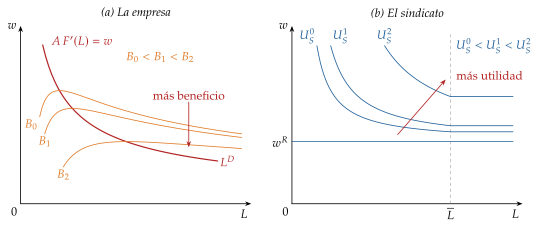
Fuente: elaboración propia a partir de Booth (1995b) y Cahuc, Carcillo y Zylberberg (2014, cap. 7).
I.2.2. El sindicato monopolista (Dunlop, 1944)
a) Idea
Dunlop (1944) es el primero en tratar al sindicato como un agente que maximiza: fija el salario, como un monopolista fija el precio, y la empresa decide cuánto empleo da a ese salario. Es el extremo en que el sindicato tiene todo el poder (\(\gamma=1\)).
b) Modelo
i) Supuestos
Juego en 2 etapas: en la primera, el sindicato elige \(w\); en la segunda, la empresa elige \(L\) sobre su demanda, \(L=L^D(w)\).
Se resuelve hacia atrás, como un juego de Stackelberg en el que lidera el sindicato: el resultado es un ENPS [ver tema 3.A.14].
ii) Desarrollo
El sindicato, que conoce la demanda de la empresa, resuelve \[\begin{array}{rl}\displaystyle \max_{w} & \displaystyle U_S\big(w,L^D(w)\big) \\ \text{s.a.} & L^D(w)\leq\overline{L}\end{array}\] La condición de primer orden iguala lo que gana con un salario algo mayor (cobra más cada empleado) con lo que pierde (hay menos empleados): \[\frac{u(w)-u(w^R)}{w\,u'(w)}=\frac{1}{|\varepsilon_{L^D,w}|} \tag{7}\] con \(\varepsilon_{L^D,w}<0\) la elasticidad de la demanda de trabajo. Con afiliados neutrales al riesgo queda \(w^S\big(1-1/|\varepsilon_{L^D,w}|\big)=w^R\): es la regla de margen del monopolio [ver tema 3.A.17]. El salario es un margen sobre el salario de reserva, mayor cuanto más rígida es la demanda de trabajo.
Gráficamente (gráfico 2), el sindicato elige el punto \(M\) de la demanda de trabajo en que esta es tangente a su indiferencia más alta: \(w^S>w^R\) y \(L^S<L^c\).
Rigidez salarial. Con una función de producción Cobb-Douglas, \(F(L)=L^{\alpha}\) con \(\alpha\in(0,1)\), la demanda de trabajo tiene elasticidad constante, \(|\varepsilon_{L^D,w}|=1/(1-\alpha)\), y con neutralidad al riesgo \[w^S=\frac{w^R}{\alpha} \tag{8}\] La productividad \(A\) no aparece (tampoco en (7) con aversión al riesgo): si la demanda de trabajo se desplaza por un shock de productividad o de demanda del producto, el salario no se mueve y es el empleo el que absorbe el shock, mientras no se llegue a emplear a todos los afiliados (anexo B).
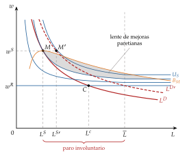
Fuente: elaboración propia a partir de Dunlop (1944) y Heijdra (2017, 244-53).
iii) Implicaciones
Salario por encima del competitivo y paro involuntario: al salario \(w^S\), \(\overline{L}-L^S\) afiliados querrían trabajar y no pueden.
Ineficiencia: el equilibrio es perfecto en subjuegos, pero no es un óptimo de Pareto. En \(M\) no hay tangencia entre la curva de indiferencia del sindicato y la isobeneficio que pasan por él: forman una lente de mejoras paretianas: con un salario algo menor y más empleo, las 2 partes estarían mejor.
Rigidez real: con demanda isoelástica, el salario no responde al ciclo y el ajuste se hace por cantidades, que es el primer hecho estilizado de la introducción.
c) Valoración
Es el análisis seminal del sindicato como agente que optimiza.6
Pero suponer que la empresa no tiene ningún poder en la fijación del salario no es realista: los modelos posteriores lo negocian.
I.2.3. El derecho a gestionar (Nickell y Andrews, 1983)
a) Idea
b) Modelo
i) Supuestos
En la primera etapa, sindicato y empresa negocian el salario con la solución de Nash generalizada, con poder \(\gamma\) para el sindicato. El punto de desacuerdo es el cierre: sin producción, la empresa gana \(B^0=0\) y cada afiliado obtiene el valor del desempleo, \(U_S^0=u(z)\).
En la segunda etapa, la empresa elige el empleo sobre su demanda.
ii) Desarrollo
Se resuelve hacia atrás: la empresa responde sobre su demanda de trabajo, y el salario sale de una negociación que lo anticipa: \[\begin{array}{rl}\displaystyle \max_{w} & \displaystyle \Big[U_S\big(w,L^D(w)\big)-U_S^0\Big]^{\gamma}\,\Big[B\big(w,L^D(w)\big)-B^0\Big]^{1-\gamma} \\ \text{s.a.} & L^D(w)\leq\overline{L}\end{array} \tag{9}\] La primera etapa es una negociación (un concepto cooperativo), no un juego con estrategias, así que, a diferencia del sindicato monopolista, el resultado no es un ENPS.
Los extremos: con \(\gamma=1\) es el sindicato monopolista (\(w^S\), punto \(M\)); con \(\gamma=0\), la empresa paga el salario de reserva y se llega al competitivo (\(w^R\), punto \(C\)). Con \(\gamma\in(0,1)\), el salario queda entre los 2 y el empleo, sobre la demanda, entre \(L^S\) y \(L^c\) (punto \(R\), gráfico 3).
Con la Cobb-Douglas y neutralidad al riesgo, el salario negociado es la media de los 2 extremos ponderada por el poder (anexo B): \[w=(1-\gamma)\,w^R+\gamma\,w^S=w^R\Big[1+\gamma\,\frac{1-\alpha}{\alpha}\Big] \tag{10}\] Tampoco depende de \(A\): la rigidez del sindicato monopolista se mantiene.
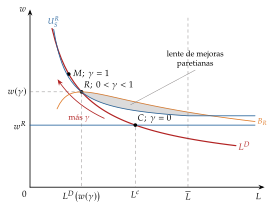
Fuente: elaboración propia a partir de Nickell y Andrews (1983) y Heijdra (2017, 244-53).
iii) Implicaciones
Más poder sindical, más salario y menos empleo: el sindicato «compra» salario con empleo, y una moderación salarial crea empleo, porque la empresa se mueve por su demanda.
El resultado no es eficiente (salvo con \(\gamma=0\)): como en el sindicato monopolista, en \(R\) las 2 curvas que pasan por el acuerdo no son tangentes y dejan una lente de mejoras paretianas, con más empleo y menos salario. Habría parados dispuestos a trabajar por menos y la empresa querría contratarlos.7
c) Valoración
Es el modelo que mejor describe cómo se negocia (el salario en el convenio y el empleo en la empresa) y el que usa la macroeconomía para la curva WS [ver tema 3.A.28].
Pero deja ganancias sin aprovechar entre 2 partes que se conocen bien. Ya Leontief (1946) advirtió que, negociando también el empleo, se alcanzaría un resultado eficiente: es lo que formalizan los contratos eficientes.
I.2.4. Contratos eficientes (McDonald y Solow, 1981)
a) Idea
Si el derecho a gestionar deja ganancias sin aprovechar, 2 partes que se sientan a negociar deberían aprovecharlas. McDonald y Solow (1981) suponen que salario y empleo entran juntos en la mesa: el resultado es eficiente en el sentido de Pareto.
b) Modelo
i) Supuestos
Una sola etapa: sindicato y empresa eligen \((w,L)\) con la solución de Nash generalizada (1), con los mismos puntos de desacuerdo.
ii) Desarrollo
Los acuerdos eficientes son las tangencias entre isobeneficio e indiferencias (como \(P\) en el gráfico 4), la curva de contratos. Igualando las pendientes (4) y (6): \[A\,F'(L)=w-\frac{u(w)-u(w^R)}{u'(w)} \tag{11}\] Dónde se sitúa el acuerdo sobre ella lo decide \(\gamma\): con \(\gamma=0\), en \(C\) (salario de reserva y empleo competitivo); con \(\gamma=1\), en \(F\), donde la empresa se queda sin beneficio y el salario es el producto medio, \(w=A\,F(L)/L\).
Afiliados neutrales al riesgo (\(u\) lineal): la curva de contratos es \(A\,F'(L)=w^R\), una vertical en el empleo competitivo. El empleo es el eficiente y no depende de \(\gamma\): el poder sindical solo reparte la renta. Es el resultado del monopolio bilateral, con el empleo competitivo \(L^c\) y un salario que da al sindicato su cuota \(\gamma\) del excedente [ver tema 3.A.17].
Afiliados aversos al riesgo: por la concavidad de \(u\), \(u(w)-u(w^R)>u'(w)\,(w-w^R)\), así que \(A\,F'(L)<w^R\). La curva de contratos está a la derecha del empleo competitivo y tiene pendiente positiva (anexo B): va de \(C\) hasta \(D\), donde se llega a emplear a todos los afiliados, y sigue vertical en \(\overline{L}\) hasta \(F\) (gráfico 4). Hay sobreempleo: el sindicato usa su poder para subir tanto el salario como el empleo, porque así asegura a sus afiliados frente al riesgo de quedarse en paro.
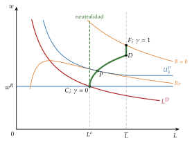
Fuente: elaboración propia a partir de McDonald y Solow (1981), Booth (1995b) y Heijdra (2017, 244-53).
iii) Implicaciones
El acuerdo está fuera de la demanda de trabajo: a ese salario, la empresa querría despedir, porque \(A\,F'(L)<w\).
Más poder sindical significa más salario y, con aversión al riesgo, más empleo. A lo largo de la curva de contratos, una moderación salarial no crea empleo, sino que lo reduce: las recetas son las contrarias a las del derecho a gestionar, y por eso importa saber cuál de los 2 describe la realidad (I.2.5).
c) Extensiones: contratos fuertemente eficientes
Nada impide negociar más cosas. Si sindicato y empresa negocian también un seguro de paro que paga la empresa a los afiliados que no trabajan, lo eficiente es asegurarlos del todo: el parado tiene que quedar igual de bien que el empleado. Es el principio de indiferencia: a cada afiliado le da igual trabajar o no, como en los contratos implícitos (III.2).
Entonces al sindicato le deja de importar el empleo (sus indiferencias son horizontales) y la empresa, que paga la diferencia entre el salario y el valor del desempleo a todos los afiliados, contrata hasta \(A\,F'(L)=w^R\). La curva de contratos es vertical en el empleo competitivo también con aversión al riesgo: el poder sindical solo reparte. Es fuertemente eficiente: eficiencia en el reparto y en la producción (Booth, 1995a).8
Por qué no se observa: los seguros de paro son públicos y casi nunca cubren del todo la pérdida de renta, y un seguro completo crea riesgo moral: si al parado le da igual estar parado, no busca empleo ni se esfuerza por conservarlo [ver tema 3.A.13].
d) Valoración
Eficiencia: el acuerdo es eficiente en el reparto entre las partes, pero, con aversión al riesgo, no en la producción: el producto marginal queda por debajo del coste de oportunidad del trabajo, \(w^R\). Por eso se le llama débilmente eficiente.
Credibilidad: una vez fijado el salario, la empresa quiere volver a su demanda y despedir. Hace falta poder verificar y exigir el empleo pactado, o una relación repetida en la que romper el acuerdo se castigue (Espinosa y Rhee, 1989).
I.2.5. Valoración y evidencia de la negociación colectiva
Los 3 modelos en un gráfico (gráfico 5 y tabla 1): todos parten del mismo aparato gráfico y cambia solo lo que se pacta. Sobre la demanda de trabajo quedan \(M\) (\(\gamma=1\)), \(R\) y \(C\) (\(\gamma=0\)); fuera de ella, la curva de contratos de \(C\) a \(F\).
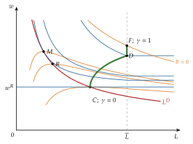
Fuente: elaboración propia a partir de McDonald y Solow (1981) y Heijdra (2017, 244-53).
| Sindicato monopolista | Derecho a gestionar | Contratos eficientes | |
|---|---|---|---|
| Qué se negocia | nada: el sindicato fija \(w\) | \(w\) | \(w\) y \(L\) |
| Quién decide el empleo | la empresa, sobre \(L^D\) | la empresa, sobre \(L^D\) | el acuerdo, fuera de \(L^D\) |
| Más poder sindical | — (\(\gamma=1\)) | más \(w\), menos \(L\) | más \(w\) y \(L\) igual (neutral) o mayor (averso) |
| Eficiencia | no: lente de mejoras | no (salvo \(\gamma=0\)) | sí en el reparto; en la producción, solo con neutralidad o seguro |
| Paro involuntario | sí | sí | no: empleo \(\geq L^c\) |
| Rigidez ante un shock | sí, con demanda isoelástica | sí, con demanda isoelástica | el empleo no se mueve con \(\gamma\) |
Fuente: elaboración propia a partir de Cahuc, Carcillo y Zylberberg (2014, cap. 7) y Booth (1995b).
¿Qué modelo describe la realidad? Los convenios fijan salarios y condiciones de trabajo y casi nunca la plantilla; suelen durar varios años; el salario se negocia a menudo en el sector y el empleo se decide en la empresa, y después del salario. Todo eso se parece más al derecho a gestionar que a los contratos eficientes (Cahuc, Carcillo y Zylberberg, 2014, cap. 7).
Lo que dicen los datos: los contrastes directos no dan un veredicto claro.
Los que buscan si el empleo pactado depende del salario alternativo, como predicen los contratos eficientes y no el derecho a gestionar, dan resultados mixtos con los convenios de la imprenta estadounidense (MaCurdy y Pencavel, 1986; Brown y Ashenfelter, 1986).
En bolsa, una subida salarial inesperada reduce el valor de la empresa en la misma cuantía en que aumenta lo que cobran los trabajadores: el salario reparte la renta, como en un contrato eficiente (Abowd, 1989).
En lo que coinciden la teoría y la evidencia: los sindicatos suben el salario de sus afiliados (la prima sindical) y reducen la dispersión salarial, y su efecto sobre el empleo es ambiguo, porque depende de lo que se negocie (Cahuc, Carcillo y Zylberberg, 2014, cap. 7).
El caso español:
Cobertura: el 92 % de los asalariados con derecho a negociar está cubierto por un convenio, casi 3 veces la media de la OCDE (34 %), aunque solo el 12,5 % de los asalariados está afiliado a un sindicato (OCDE, 2026a, 2026b). La cifra depende de la definición: la OCDE solo cuenta en el denominador a los asalariados con derecho a negociar. La diferencia con la afiliación se debe a que los convenios obligan a todos los empresarios y trabajadores de su ámbito, estén o no afiliados (Ministerio de Empleo y Seguridad Social, 2015, art. 82.3).
Salarios pactados: los convenios registrados hasta septiembre de 2026 pactan para este año una subida media del 3,05 %, algo menor en los de empresa (2,60 %) que en los sectoriales (3,09 %); en 2025 fue del 3,51 % (Ministerio de Trabajo y Economía Social, 2026a).
El nivel al que se negocia (empresa, sector o país) y sus efectos sobre el paro están en el anexo D; la regulación española y sus reformas, en [ver tema 4.A.16].
I.3. La negociación salarial en los modelos macroeconómicos
La solución de Nash es hoy la forma estándar de cerrar los modelos macroeconómicos del mercado de trabajo:
En el modelo de Diamond, Mortensen y Pissarides, con búsqueda y emparejamiento,9 cada emparejamiento genera una renta y el salario la reparte con la regla de Nash. La curva salarial usa el mismo poder \(\gamma\) y el mismo valor del desempleo \(z\) que aquí: \[w=(1-\gamma)\,z+\gamma\,(y+c\,\theta) \tag{12}\] con \(y\) lo que produce un emparejamiento, \(c\) el coste de mantener una vacante y \(\theta=V/U\) la tensión del mercado. Con más vacantes por parado, la amenaza de irse vale más y el salario sube; con \(\gamma=0\), el salario es el de reserva, como en \(C\). Junto con la creación de empleo, determina el paro de equilibrio [ver tema 3.A.26].
En el modelo de fijación de salarios y precios de Layard, Nickell y Jackman (1991), que recogen los manuales actuales (Carlin y Soskice, 2015, cap. 2), la negociación con derecho a gestionar da la curva WS: \[\frac{W}{P^e}=F(U,Z)\cdot\mathrm{PAT}^e,\qquad F_U<0 \tag{13}\] con \(W\) el salario nominal, \(P^e\) los precios esperados, \(U\) la tasa de paro, \(Z\) los factores institucionales (prestaciones, poder sindical) y \(\mathrm{PAT}^e\) la productividad esperada. Con menos paro, el sindicato tiene mejores alternativas y pide más; su cruce con la curva de fijación de precios da la NAIRU [ver tema 3.A.28].
Evidencia: la curva salarial de Blanchflower y Oswald (1994). En muchos países, el salario de una región baja con su tasa de paro, con una elasticidad en torno a \(-0{,}1\): la pendiente negativa que predicen la WS y la negociación.
Recapitulación del bloque: la negociación explica por qué el salario sube cuando baja el paro y por qué, si solo se negocia el salario, queda por encima del que vacía el mercado. Hasta aquí, la rigidez viene del poder de los trabajadores organizados. En los 2 bloques siguientes nace de la conducta optimizadora de la propia empresa, con información asimétrica (salarios de eficiencia) o con incertidumbre (contratos implícitos).
II. Salarios de eficiencia
En el cante: la idea con los 5 motivos de palabra (1′); Solow (3′): supuestos en una frase, el programa de la empresa, la condición de Solow recuadrada y el panel a del gráfico 6 (la función de esfuerzo en S y el rayo tangente), con las implicaciones y la crítica del largo plazo, que abre la puerta a Shapiro y Stiglitz; la extensión de Summers, en una frase. Shapiro y Stiglitz (5′30″): los 3 estados de palabra, las 3 ecuaciones de valor, la condición de no escaqueo como restricción de incentivos y el gráfico 8 por capas (demanda, oferta, condición de no escaqueo, \(E^W\) y \(E\), y la caída de la demanda); luego las implicaciones, la evidencia (Ford, Krueger y Summers, Bewley) y la valoración. Se marca en la izquierda el supuesto 2 y se apunta «lo barato sale caro». Se borra el centro del bloque I y se dejan a la derecha el producto de Nash y \(U_S\); se añaden la condición de Solow y la de no escaqueo. Las ecuaciones de valor paso a paso, la subida de \(q\) y el caso sin rotación están en el anexo C.
Conclusión anticipada: si lo que rinde un trabajador depende de lo que cobra, a la empresa le conviene pagar más que el salario que vaciaría el mercado y no bajarlo aunque haya parados que se ofrezcan por menos. El salario real se vuelve rígido y aparece paro involuntario sin que nadie tenga poder de mercado: la rigidez la elige la propia empresa.
Una vez vista la rigidez que imponen los trabajadores organizados, pasamos a la que nace de la información: levantamos el supuesto de información perfecta del modelo neoclásico [ver tema 3.A.25]. Lo barato sale caro.
II.1. Idea
Los modelos de salarios de eficiencia, que se desarrollan sobre todo en los años 80 (Akerlof y Yellen, 1986), comparten una idea: la productividad del trabajador depende del salario que se le paga. Un salario de eficiencia es el que la empresa paga, por decisión propia, por encima del de equilibrio walrasiano, porque la plantilla le devuelve en rendimiento más de lo que le cuesta la diferencia.
Subir el salario tiene para la empresa un coste evidente y un beneficio menos evidente. La literatura da 5 razones de ese beneficio, cada una con su autor:
Nutrición (Leibenstein, 1957): en las economías pobres, un salario mayor permite comer mejor, y el trabajador bien alimentado rinde más.
Rotación (Stiglitz, 1974; Salop, 1979): si la empresa paga más que las demás, menos trabajadores se marchan, y se ahorra lo que cuesta contratar y formar a quienes los sustituyen.
Selección adversa (Weiss, 1980): los más capaces tienen un salario de reserva más alto, así que una oferta mejor atrae a candidatos mejores en cualidades que la empresa no ve [ver tema 3.A.13].
Escaqueo (Shapiro y Stiglitz, 1984): si la empresa no observa el esfuerzo, cuanto más cobra el trabajador más pierde si lo despiden por no esforzarse; es un problema de riesgo moral [ver tema 3.A.13].
Equidad e intercambio de regalos (Akerlof, 1982; Akerlof y Yellen, 1990): quien se siente bien pagado corresponde con más esfuerzo, y quien se siente tratado injustamente, con menos, o incluso con sabotaje.
Primero veremos el resultado que tienen en común todas ellas, con el esfuerzo observable (Solow, 1979), y después el fundamento más estudiado, el escaqueo con información asimétrica (Shapiro y Stiglitz, 1984).
II.2. Modelo de información perfecta (Solow, 1979)
a) Idea
En un artículo de 4 páginas, Solow (1979)10 muestra el resultado que comparten todos los motivos: si el esfuerzo depende del salario, la empresa elige el salario que abarata el trabajo efectivo, y ese salario no depende de la oferta ni de la demanda de trabajo.
El esfuerzo es observable; lo que importa es solo que responda al salario.
b) Modelo
i) Supuestos
Hay \(J\) empresas idénticas y competitivas.11 Cada una produce con trabajo efectivo, el número de trabajadores multiplicado por su esfuerzo \(e\), y con el precio del producto normalizado a 1 obtiene el beneficio \[B=A\,F\big(e\,L\big)-w\,L,\qquad F'>0,\ F''<0 \tag{14}\]
El esfuerzo depende solo del salario real, \(e=e(w)\) con \(e'>0\). La función tiene forma de S: con salarios muy bajos el esfuerzo es nulo o crece cada vez más deprisa; con salarios altos crece cada vez más despacio.
Hay \(\overline{L}\) trabajadores idénticos, que ofrecen cada uno una unidad de trabajo sea cual sea el salario (oferta inelástica).
Un salario mayor tiene 2 efectos sobre el beneficio: lo reduce, porque encarece la plantilla, y lo aumenta, porque eleva el esfuerzo y la producción.
ii) Desarrollo
Si hay parados, la empresa no necesita pagar lo que paguen las demás para encontrar trabajadores: elige a la vez el empleo y el salario, \[\begin{array}{rl}\displaystyle \max_{L,\,w} & \displaystyle A\,F\big(e(w)\,L\big)-w\,L \\ \text{s.a.} & L\geq 0\end{array}\] Las condiciones de primer orden son \[\frac{\partial B}{\partial L}=0:\ A\,F'\big(e(w)L\big)\,e(w)=w,\qquad\qquad \frac{\partial B}{\partial w}=0:\ A\,F'\big(e(w)L\big)\,e'(w)\,L=L \tag{15}\] y, dividiendo la primera entre la segunda, se llega a la condición de Solow:
\[\varepsilon_{e,w}\equiv\frac{w^*\,e'(w^*)}{e(w^*)}=1\tag{16}\]
En el salario de eficiencia \(w^*\), el esfuerzo responde al salario con elasticidad unitaria.
Interpretación: la empresa compra trabajo efectivo. Por cada trabajador paga \(w\) y recibe \(e(w)\) unidades de trabajo efectivo, así que el coste por unidad de trabajo efectivo es \(w/e(w)\). Le conviene subir el salario mientras un 1 % más de salario dé más de un 1 % más de esfuerzo (el coste unitario baja) y dejar de subirlo cuando dé menos (el coste unitario sube). El salario de eficiencia es el que minimiza \(w/e(w)\).12
Gráficamente (gráfico 6): en el plano \((w,e)\), cada rayo desde el origen une los puntos con el mismo cociente \(e/w\), mayor cuanto más empinado es el rayo. La empresa busca el rayo más empinado que toca la función de esfuerzo, y ese es el que le es tangente: el punto de tangencia da \(w^*\) y \(e^*\).
Empleo: fijado \(w^*\), la empresa contrata hasta que el producto marginal del trabajo efectivo iguala su coste, \(A\,F'(e^*L)=w^*/e^*\). Es una demanda de trabajo convencional, medida en unidades de eficiencia, que da \(L^*\) por empresa. Con \(J\) empresas iguales, la demanda total es \(J\,L^*\):
si \(J\,L^*<\overline{L}\), el salario es \(w^*\) y quedan \(\overline{L}-J\,L^*\) parados;
si \(J\,L^*\geq\overline{L}\), las empresas se disputan a los trabajadores, el salario sube por encima de \(w^*\) hasta vaciar el mercado y no hay paro.
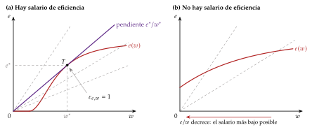
Fuente: elaboración propia a partir de Solow (1979) y Romer (2019, cap. 11).
iii) Implicaciones
Paro involuntario: los parados aceptarían trabajar a \(w^*\) o por menos, pero la empresa no les baja el salario, porque perdería más en esfuerzo de lo que ganaría en coste.
Rigidez del salario real: \(w^*\) depende solo de la forma de \(e(w)\), no de la productividad \(A\) ni de la demanda de trabajo. Si la demanda de trabajo cae, el salario no se mueve y todo el ajuste lo hace el empleo, que es el primer hecho estilizado de la introducción.
Rigidez real que amplifica las nominales: si el salario real y el esfuerzo no cambian, tampoco el coste marginal, y a las empresas que fijan precios les compensa poco moverlos ante un shock de demanda. Es una de las rigideces reales que la nueva economía keynesiana combina con pequeños costes de cambiar los precios (Ball y Romer, 1990) [ver tema 3.A.7].
c) Extensiones: el paro de equilibrio (Summers, 1988)
Si el esfuerzo depende de cuánto mejor paga la empresa que la alternativa del trabajador, la rigidez deja de ser absoluta. Summers (1988) propone que el esfuerzo dependa de la ventaja del salario \(w\) sobre esa alternativa, \(x\), que es el salario de las demás empresas, \(w_a\), ponderado por la probabilidad de encontrar empleo, menor cuanto mayor es la tasa de paro \(U\): \[e=\Big(\frac{w-x}{x}\Big)^{\eta},\qquad x=(1-b\,U)\,w_a,\qquad 0<\eta<1,\ b>0\] con \(\eta\) y \(b\) parámetros de este ejemplo.
La condición de Solow da \(w=x/(1-\eta)\): cada empresa quiere pagar una prima sobre la alternativa.
Pero en equilibrio todas pagan lo mismo, \(w=w_a\), y eso solo es compatible con una tasa de paro \[U=\frac{\eta}{b} \tag{17}\] Con menos paro, a cada empresa le compensaría superar el salario de sus competidoras; esa puja encarece el trabajo y reduce el empleo hasta que el paro vuelve a \(\eta/b\).
Implicaciones: el paro de equilibrio lo fijan los parámetros del esfuerzo, \(\eta\) y \(b\), y no la productividad, de modo que el crecimiento ya no lo hace desaparecer: acaba en el salario. Y basta una elasticidad pequeña para generar bastante paro: con \(\eta=0{,}06\) y \(b=1\), la tasa de paro de equilibrio es del 6 % (Romer, 2019, cap. 11). La relación entre el salario que fijan las empresas y el paro es, otra vez, una curva de fijación de salarios [ver tema 3.A.28].
d) Valoración
Aportación: es la explicación más sencilla del paro involuntario con empresas que optimizan y sin poder de mercado, y da una rigidez del salario real con fundamento microeconómico.
Limitaciones:
En su forma básica, la rigidez es demasiado fuerte: dura también a largo plazo. Con el crecimiento, la demanda de trabajo se desplaza a la derecha, el salario no sube y el paro debería ir bajando hasta desaparecer; en los datos, el paro no tiene tendencia a largo plazo y el crecimiento acaba en los salarios.13 Lo corrige que el esfuerzo dependa también de lo que pasa fuera de la empresa, como en la extensión.
No dice por qué el esfuerzo depende del salario. Para contestarlo hace falta un modelo con información asimétrica, que es lo que construyen Shapiro y Stiglitz.
II.3. Modelo de información asimétrica (Shapiro y Stiglitz, 1984)
a) Idea
Shapiro y Stiglitz (1984)14 dan un fundamento al salario de eficiencia: la empresa no ve si el trabajador se esfuerza y su única sanción es despedir al que descubre sin trabajar.
Pero si no hubiera paro, a quien echan lo contrataría otra empresa al momento, y la amenaza de despido no asustaría a nadie. Para que el despido duela, tener empleo tiene que valer más que estar parado: la empresa paga por encima del salario de mercado y, en equilibrio, tiene que haber paro. El paro es el mecanismo de disciplina de los trabajadores.
b) Modelo
i) Supuestos
Agentes: en tiempo continuo, \(\overline{L}\) trabajadores neutrales al riesgo que descuentan el futuro a la tasa \(\rho\) y \(J\) empresas idénticas. Se estudia el estado estacionario.
Esfuerzo: el trabajador elige esforzarse (\(e=\overline{e}\), que le cuesta \(\overline{e}\)) o escaquearse (\(e=0\)). Su utilidad instantánea es \(w-\overline{e}\) si está empleado y se esfuerza (estado E), \(w\) si está empleado y se escaquea (estado S, del inglés shirking) y 0 si está parado (estado U).
Transiciones entre los 3 estados (gráfico 7), todas como procesos de Poisson, que no tienen memoria:
los empleos se destruyen por causas ajenas al trabajador a la tasa de separación \(s\), exógena;
a quien se escaquea lo descubren y lo despiden, además, a la tasa de detección \(q\), exógena;
los parados encuentran empleo a la tasa \(f\), que cada trabajador toma como dada pero que en el agregado es endógena: depende de cuánto contraten las empresas y de cuántos parados haya.
Empresas: el beneficio es \(B=A\,F(\overline{e}\,L)-w\,L\), con \(L\) los empleados que se esfuerzan; quien se escaquea cobra y no produce, así que la empresa paga lo necesario para que nadie lo haga.
Sin el problema de información habría pleno empleo: con todos empleados, el producto marginal de un trabajador supera lo que le cuesta esforzarse, \(A\,\overline{e}\,F'\big(\overline{e}\,\overline{L}/J\big)>\overline{e}\).
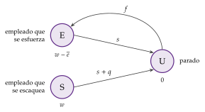
Fuente: elaboración propia a partir de Shapiro y Stiglitz (1984) y Romer (2019, cap. 11).
ii) Desarrollo
Valores de cada estado. Sean \(V_{\mathrm E}\), \(V_{\mathrm S}\) y \(V_{\mathrm U}\) los valores esperados descontados de estar empleado y esforzarse, empleado y escaqueándose, y parado. Cumplen (anexo C): \[\rho\,V_{\mathrm E}=(w-\overline{e})-s\,(V_{\mathrm E}-V_{\mathrm U}),\qquad \rho\,V_{\mathrm S}=w-(s+q)\,(V_{\mathrm S}-V_{\mathrm U}),\qquad \rho\,V_{\mathrm U}=f\,(V_{\mathrm E}-V_{\mathrm U}) \tag{18}\] Se leen como el rendimiento de un activo: lo que rinde cada estado por unidad de tiempo es lo que se cobra en él más la ganancia, o menos la pérdida, esperada de pasar a otro.
La condición de incentivos. La empresa paga lo justo para que nadie se escaquee, \(V_{\mathrm E}\geq V_{\mathrm S}\). Es la restricción de compatibilidad de incentivos (IC) del modelo principal-agente: el principal no ve la acción del agente y tiene que hacer que le convenga elegir la que él quiere [ver tema 3.A.13]. Restando las 2 primeras ecuaciones de (18) con \(V_{\mathrm E}=V_{\mathrm S}\) queda \[V_{\mathrm E}-V_{\mathrm U}=\frac{\overline{e}}{q}\] La ventaja de estar ocupado sobre estar parado tiene que cubrir el coste del esfuerzo dividido entre la tasa de detección: el trabajador obtiene una renta.
El mercado en estado estacionario. Las entradas en el paro tienen que igualar a las salidas, \(s\,J\,L=f\,(\overline{L}-J\,L)\). Con la tasa de paro \(U\equiv(\overline{L}-J\,L)/\overline{L}\), eso da \(f+s=s/U\). Sustituyendo en las ecuaciones de valor se obtiene la condición de no escaqueo (CNE, no-shirking condition):
\[w\ \geq\ \overline{e}+\Big(\rho+\frac{s}{U}\Big)\frac{\overline{e}}{q}\tag{19}\]
La empresa paga exactamente el mínimo, con igualdad. El salario que evita el escaqueo es mayor cuanto más cuesta el esfuerzo, cuanto más impacientes son los trabajadores y cuanto más rotan, y menor cuanto mejor se vigila. Sobre todo, baja con el paro: cuanto más paro, más tarda el despedido en volver a trabajar y más le cuesta el despido. Cuando el paro tiende a cero (\(U\to 0\)), el salario necesario crece sin límite: con pleno empleo no hay salario que disuada.
El equilibrio (gráfico 8), en el plano con el empleo total \(J\,L\) en el eje horizontal y el salario en el vertical:
la demanda de trabajo es convencional: cada empresa contrata hasta que el producto marginal iguala el salario, \(A\,\overline{e}\,F'(\overline{e}\,L)=w\);
la oferta de trabajo es horizontal en \(\overline{e}\) (nadie trabaja por menos de lo que le cuesta esforzarse) hasta \(\overline{L}\), donde se hace vertical;
la CNE es creciente y se hace vertical al acercarse a \(\overline{L}\).
Con información perfecta, el equilibrio sería el walrasiano, \(E^W\): pleno empleo y un salario igual al producto marginal en \(\overline{L}\). Con información asimétrica, el equilibrio es \(E\), el corte de la demanda con la CNE: salario \(w^*\) y paro.
Estática comparativa: una caída de la demanda de trabajo (un shock negativo de productividad o de demanda del producto, \(A\downarrow\)) desplaza la demanda a la izquierda; el nuevo equilibrio se mueve a lo largo de la CNE, con menos empleo y un salario algo menor; cuánto se ajusta cada uno depende de la pendiente de la CNE. Más vigilancia (\(q\uparrow\)) baja la CNE; sin rotación (\(s=0\)), la CNE es horizontal (anexo C).
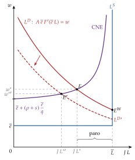
Fuente: elaboración propia a partir de Shapiro y Stiglitz (1984) y Romer (2019, cap. 11).
iii) Implicaciones
Paro involuntario de equilibrio: «quienes no tienen trabajo estarían encantados de trabajar a \(w^*\) o por menos, pero no pueden prometer de forma creíble que no se escaquearán a esos salarios» (Shapiro y Stiglitz, 1984, 438).15 Si una empresa contratara por menos, sus nuevos empleados se escaquearían.
Ajuste por cantidades: ante un shock de demanda, el empleo se mueve más y el salario menos que con información perfecta, en la que la oferta vertical haría que todo el ajuste lo hiciera el salario.
Ineficiencia: el producto marginal en pleno empleo supera el coste del esfuerzo, así que el óptimo sería emplear a todos, y con esfuerzo.
Pero imponer el pleno empleo no sirve: sin paro, nadie se esforzaría y la producción sería nula.
Sí mejora el bienestar con más vigilancia o con un subsidio salarial financiado con un impuesto sobre los beneficios: la demanda de trabajo sube a lo largo de la CNE, con más salario y más empleo, y la producción adicional vale más que lo que cuesta (Shapiro y Stiglitz, 1984).
Un subsidio de paro más generoso, en cambio, hace menos costoso el despido y aumenta el paro de equilibrio: no porque los parados busquen menos, sino porque la empresa tiene que pagar más para disciplinar.
Paro de otra naturaleza que el keynesiano: el paro de equilibrio no se debe a falta de demanda, sino a un problema de información, y la receta de fondo es reducirlo. Aun así, los shocks de demanda sí mueven el empleo a corto plazo.
c) Extensiones
Mercados de trabajo duales: si en un sector el producto se mide bien y es fácil vigilar, y en otro no, en el segundo se pagan rentas y hay cola para entrar, mientras que en el primero se cobra el salario de mercado. Los trabajadores del sector primario no quieren dejar su empleo (Bulow y Summers, 1986).
Otros costes del despido: si el despedido pierde capital humano específico o tiene que mudarse, el despido duele aunque haya poco paro, y hace falta menos paro para disciplinar. El paro involuntario será mayor en los colectivos que cambian de empleo con facilidad (Shapiro y Stiglitz, 1984, 442).
d) Evidencia empírica
Ford, 1914: además de reducir la rotación y el absentismo que vimos en el enganche, el día de 5 dólares elevó la productividad entre un 40 y un 70 % (Raff y Summers, 1986). Para Raff y Summers (1987), es el caso que mejor encaja con la teoría: la subida respondía a los problemas de rotación y de disciplina de la fábrica.
Diferencias salariales entre industrias: trabajadores con las mismas características cobran de forma persistente más en unas industrias que en otras, y las industrias que pagan más tienen menos abandonos. Son rentas, no compensaciones por peores condiciones (Krueger y Summers, 1988).
Escaqueo y paro: en las fábricas de una misma empresa, hay menos despidos disciplinarios donde la prima sobre el salario de la zona es mayor y donde hay más paro, como predice la CNE (Cappelli y Chauvin, 1991).
Equidad: en el laboratorio, los salarios más altos se devuelven con más esfuerzo y el mercado no se vacía (Fehr, Kirchsteiger y Riedl, 1993); y, preguntados, los directivos explican que no bajan salarios en las recesiones porque temen hundir la moral de la plantilla, y prefieren despedir a unos pocos (Bewley, 1999).
e) Valoración
Aportación: da al salario de eficiencia un fundamento de información asimétrica y explica por qué los parados no pueden ofrecerse por menos. Por eso es una pieza de la nueva economía keynesiana [ver tema 3.A.7].
Críticas teóricas:
¿Por qué no se usan contratos más complejos? Si el trabajador depositara una fianza al entrar, que perdería si lo sorprenden escaqueándose, no harían falta ni salarios altos ni paro (Carmichael, 1985). Los salarios que suben con la antigüedad cumplen un papel parecido (Lazear, 1979). La respuesta: muchos trabajadores no tienen con qué pagar la fianza y, sobre todo, la empresa tendría incentivos a acusar en falso para quedársela (Shapiro y Stiglitz, 1984, 442; 1985).
El problema podría ser de selección adversa, con habilidades que no se observan, y no de riesgo moral [ver tema 3.A.13].
Críticas empíricas:
Calibrada, la CNE es demasiado empinada a las tasas de paro que se observan: el modelo predice que los desplazamientos de la demanda mueven demasiado el salario y poco el empleo.
Como el de Solow, predice que el crecimiento reduce el paro a largo plazo, salvo que el coste del esfuerzo crezca con la productividad (Romer, 2019, cap. 11).
El esfuerzo es difícil de medir, la evidencia directa es de casos concretos y, en el laboratorio, el efecto de un regalo salarial se diluye con el tiempo (Gneezy y List, 2006).
Recapitulación del bloque: los salarios de eficiencia explican la rigidez del salario real, el paro involuntario y la relación negativa entre salario y paro sin que nadie tenga poder de mercado. Pero la relación laboral sigue siendo de un solo período. En el bloque siguiente, empresa y trabajador se comprometen para muchos períodos con incertidumbre: el salario se convierte en un seguro.
III. Modelo de contratos implícitos
En el cante: la idea en una frase (0′30″); el modelo (2′30″): supuestos de palabra, el programa de la empresa recuadrado y sus 2 condiciones (seguro completo y empleo eficiente), sin gráfico; las implicaciones, con la idea de que no hay paro involuntario. Las extensiones (2′15″): información asimétrica y autoexigibilidad en una frase cada una, y los insiders con su salario máximo, la histéresis y la dualidad; el programa de la empresa y el gráfico de los insiders están en el anexo E. La valoración (0′45″), con Beaudry y DiNardo y los ERTE. Se borra el centro y se dejan a la derecha las funciones clave; se añaden el contrato implícito y el salario máximo de los insiders. Se marcan en la izquierda los supuestos 6 y 7 y se apunta «a las duras y a las maduras».
Conclusión anticipada: cuando la relación laboral dura y el futuro es incierto, la empresa, que puede diversificar el riesgo, asegura a sus trabajadores, que no pueden, con una renta que no varía con el ciclo. El salario no sigue a la productividad, pero el empleo que se pacta en cada situación es el eficiente: los contratos implícitos explican la rigidez del salario, no el paro involuntario. El paro lo explica su extensión con insiders y outsiders: quienes ya están dentro deciden quién soporta el ajuste.
Una vez vistas la rigidez que imponen los trabajadores organizados y la que elige la empresa por falta de información, pasamos a la que nace del tiempo y de la incertidumbre: levantamos la flexibilidad del salario período a período y, con los insiders, la movilidad sin costes [ver tema 3.A.25]. Es un contrato a las duras y a las maduras.
III.1. Idea
Pregunta: ¿por qué el salario real apenas responde a los shocks de productividad, y el ajuste se hace por el empleo?
Respuesta: muchas relaciones laborales duran décadas (Hall, 1982), así que el salario no se fija cada día como en un mercado al contado. Baily (1974), Gordon (1974) y Azariadis (1975) ven en esa relación un seguro:
el trabajador es averso al riesgo y no puede asegurar su renta laboral en ningún mercado;
los dueños de la empresa reparten su riesgo entre muchos activos y se comportan como neutrales al riesgo;
a los 2 les conviene un contrato en el que la empresa pague una renta estable y cargue con las fluctuaciones.
El contrato es implícito: no está escrito ni se puede exigir ante un juez; lo mantiene en pie la reputación de la empresa.
III.2. Modelo
i) Supuestos
Incertidumbre: la productividad de la empresa toma el valor \(A_j\) en el estado de la naturaleza \(j=1,\dots,n\), con probabilidad \(\pi_j\). Empresa y trabajador observan el estado.
Empresa: neutral al riesgo; en el estado \(j\) produce \(A_j\,F(L_j)\), paga al trabajador una renta \(C_j\), que es su consumo, y le pide \(L_j\) horas de trabajo.
Trabajador: obtiene \(u(C_j)-v(L_j)\), con \(u\) cóncava (aversión al riesgo) y \(v\) convexa (desutilidad del trabajo). No tiene acceso a mercados de seguros y solo acepta el contrato si le da al menos la utilidad esperada de su mejor alternativa, la utilidad de reserva \(U^R\).
Momento: el contrato se firma antes de conocer el estado.
ii) Desarrollo
La empresa diseña el contrato, una renta y unas horas para cada estado, y maximiza su beneficio esperado sujeta a la restricción de participación del trabajador:
\[\begin{array}{rl}\displaystyle \max_{\{C_j,\,L_j\}} & \displaystyle \sum\nolimits_{j=1}^{n}\pi_j\,\big[A_j\,F(L_j)-C_j\big] \\ \text{s.a.} & \sum\nolimits_{j=1}^{n}\pi_j\,\big[u(C_j)-v(L_j)\big]\geq U^R\end{array}\tag{20}\]
Con el multiplicador \(\lambda\) de la restricción, las condiciones de primer orden son:
respecto de \(C_j\): \(\pi_j=\lambda\,\pi_j\,u'(C_j)\), es decir, \(u'(C_j)=1/\lambda\) en todos los estados, y, como \(u'\) es decreciente, \(C_j=\overline{C}\);
respecto de \(L_j\): \(\pi_j\,A_j\,F'(L_j)=\lambda\,\pi_j\,v'(L_j)\), es decir, \[A_j\,F'(L_j)=\frac{v'(L_j)}{u'(\overline{C})} \tag{21}\]
Interpretación:
La primera es el seguro completo: la utilidad marginal de la renta es la misma en todos los estados, así que la renta del trabajador no depende de la suerte de la empresa. Quien es neutral al riesgo carga con todo el riesgo, como en el reparto eficiente del riesgo [ver tema 3.A.10].
La segunda dice que en cada estado se trabaja lo eficiente: el producto marginal iguala lo que el trabajador exige en consumo por renunciar a una hora más de ocio (su relación marginal de sustitución), como en un mercado al contado. En los estados buenos se trabaja más.
Con horas fijas (cada trabajador hace una jornada completa o no trabaja), lo que se estabiliza es el salario: \(w_j=\overline{w}\) en todos los estados. El trabajador acepta un salario medio menor que el que cobraría en un mercado al contado: la diferencia es la prima de riesgo que paga por el seguro [ver tema 3.A.10].
Lectura con el principal-agente: es el caso del principal neutral al riesgo y el agente averso con información simétrica; lo óptimo es que el principal asegure del todo al agente con un pago fijo [ver tema 3.A.13].
iii) Implicaciones
Rigidez del salario real: la renta del trabajador no responde a los shocks; el ajuste lo hacen las horas o el empleo. Con horas variables, el salario por hora, \(\overline{C}/L_j\), es incluso contracíclico: se trabaja más en los estados buenos por la misma renta.
Ganan los 2: el trabajador, porque prefiere una renta segura a una incierta con la misma media; la empresa, porque paga de media menos.
No hay paro involuntario: el empleo de cada estado está en el contrato y es el eficiente, y nadie trabaja menos de lo que aceptó trabajar. El salario observado deja de ser el precio que decide cuánto se trabaja, y que sea rígido no causa por sí mismo pérdidas de empleo (Barro, 1977). Los contratos implícitos explican la rigidez del salario, no el paro.
III.3. Extensiones
Extensiones del modelo básico
Despidos: si el trabajo es indivisible, en los estados malos el contrato despide a algunos trabajadores, elegidos al azar (Azariadis, 1975). Si el contrato incluye una indemnización, los despedidos quedan igual que los que siguen, como en el principio de indiferencia de los contratos fuertemente eficientes (I.2.4); si no la incluye, quedan peor: el paro es involuntario a posteriori, aunque el contrato se aceptara voluntariamente a priori (Rosen, 1985).
Información asimétrica: si solo la empresa observa el estado, el seguro completo no se sostiene, porque a la empresa le convendría declarar siempre un estado malo para pagar menos. Para que le compense decir la verdad, el contrato tiene que hacerle costoso mentir, y eso distorsiona el empleo:
hay subempleo en los estados malos si la empresa es también aversa al riesgo (Grossman y Hart, 1981; Azariadis, 1983);
hay sobreempleo si es neutral al riesgo y el ocio es un bien normal (Green y Kahn, 1983).
Azariadis y Stiglitz (1983) resumen esta literatura.
Esfuerzo no observable: si el trabajador puede esforzarse menos sin que la empresa lo sepa, el seguro completo le quita los incentivos, y el contrato óptimo le deja parte del riesgo [ver tema 3.A.13].
Autoexigibilidad: como no se puede llevar a un juez, el contrato tiene que ser creíble. La empresa cumple porque, si no, pierde su reputación y le cuesta más contratar en el futuro, como en un juego repetido (Bull, 1987) [ver tema 3.A.14]. Y el trabajador puede irse cuando fuera le pagan más, así que el salario tiene que subir cuando el mercado se tensa, aunque no baje cuando se relaja.
Otras variantes: el seguro puede cubrir el empleo y no el salario, con pagos al trabajador que queda parado; y, si lo que se asegura es el consumo, el salario por hora se vuelve contracíclico, como acabamos de ver.
Insiders y outsiders (Lindbeck y Snower, 1988)
a) Idea
Los contratos implícitos dicen que el ajuste se hace por el empleo, pero no quién lo soporta. Lindbeck y Snower (1988) distinguen a los insiders, los que ya tienen empleo y negocian el salario, de los outsiders, los parados o con empleos precarios, que no cuentan en la negociación.
El poder de los insiders nace de los costes de rotación: sustituirlos le cuesta a la empresa despedirlos y contratar y formar a otros. La formación específica, que solo vale en esa empresa y cuyo coste y renta se reparten empresa y trabajador, es una de sus raíces [ver tema 3.A.25].
b) Modelo
i) Supuestos
La empresa empieza con \(\overline{L}_I\) insiders y decide cuántos conserva y cuántos outsiders contrata, con la misma productividad.
Despedir a un insider le cuesta \(c_D\) y contratar a un outsider, \(c_C\).
Los outsiders no tienen poder y cobran \(w_O\), su salario de reserva; los insiders negocian su salario, \(w_I\), antes de que la empresa decida el empleo.
ii) Desarrollo
Conservar a un insider le ahorra a la empresa el coste de despedirlo; contratar a un outsider le cuesta su salario más el de contratación. La empresa no sustituye a los insiders mientras su salario no supere \[w_I=w_O+c_D+c_C \tag{22}\] Es el salario máximo que pueden pedir: los insiders se apropian, como mucho, de los costes de rotación. El programa de la empresa y los casos según el número de insiders, con su gráfico, están en el anexo E.
iii) Implicaciones
Paro involuntario: hay outsiders que trabajarían por \(w_O\), menos que los insiders, pero a la empresa no le compensa sustituir a nadie.
Persistencia del paro (histéresis): tras un shock negativo, quienes pierden el empleo se convierten en outsiders y salen de la mesa de negociación. Los insiders que quedan, menos, fijan salarios pensando en conservar sus puestos, no en que vuelvan los despedidos, y el empleo no se recupera cuando pasa el shock. La tasa de paro de equilibrio depende de la historia (O. J. Blanchard y Summers, 1986) [ver tema 3.A.28].
Dualidad: unos con empleo estable y buenas condiciones, otros entrando y saliendo del empleo. En España, la diferencia entre contratos indefinidos y temporales hizo que el ajuste de la Gran Recesión recayera sobre los temporales (Bentolila et al., 2012) [ver tema 4.A.16].
Política económica: reducir el poder de los insiders y abrir la puerta a los outsiders, con costes de rotación más bajos, cláusulas de descuelgue de los convenios, formación de los parados y subvenciones a su contratación.
III.4. Valoración
Aportación: explican por qué el salario real es estable a lo largo del ciclo y el ajuste se hace por el empleo, con agentes que optimizan y sin poder de mercado, y muestran que la rigidez del salario no implica por sí sola ineficiencia.
Evidencia:
Si el salario fuera de un mercado al contado, dependería del paro de cada momento. Si fuera un contrato implícito que el trabajador puede romper para irse, subiría cuando el mercado se tensa y no bajaría después: dependería del paro más bajo desde que entró en la empresa. Con datos individuales de Estados Unidos, eso es lo que se observa (Beaudry y DiNardo, 1991).
Los expedientes de regulación temporal de empleo (ERTE) de la pandemia aplicaron la misma lógica de seguro con apoyo público: el 30 de abril de 2020 había más de 3,3 millones de trabajadores en ERTE (3.386.785), que conservaban su empleo mientras las horas se ajustaban, con la renta asegurada en parte por la prestación (Ministerio de Inclusión, Seguridad Social y Migraciones, 2020). Es un seguro explícito que completa al implícito [ver tema 4.A.16].
Limitaciones:
No explican el paro involuntario sin extensiones (información asimétrica, despidos sin indemnización o insiders).
Lo que estabilizan es el salario real; la rigidez nominal que importa para la política monetaria tiene otras causas, como los costes de menú o los contratos escalonados [ver tema 3.A.7].
Su autoexigibilidad depende de la reputación, que se debilita con relaciones laborales más cortas.
Recapitulación del bloque: la estabilidad del salario puede ser un seguro eficiente entre una empresa neutral y unos trabajadores aversos al riesgo. El paro aparece cuando la información es asimétrica o cuando quienes ya están dentro fijan el salario solo para ellos.
Conclusión
Recapitulación: En conclusión, el salario no es un precio que se limite a vaciar el mercado de trabajo. Cada bloque de la exposición ha dado una razón, levantando un supuesto distinto del modelo neoclásico (tabla 2):
con negociación colectiva, el poder del sindicato sube el salario: si solo se negocia el salario, lo hace a costa del empleo y deja paro involuntario; si se negocia también el empleo, el poder solo reparte la renta;
con salarios de eficiencia, es la propia empresa la que paga más, porque así obtiene más esfuerzo, y el paro es lo que disciplina a los trabajadores;
con contratos implícitos, el salario estable es un seguro: explica la rigidez, no el paro, que aparece cuando los insiders fijan el salario pensando solo en ellos.
Los 3 bloques son microfundamentos de la curva de fijación de salarios: la negociación y la condición de no escaqueo le dan su pendiente (el salario sube cuando baja el paro), los contratos implícitos explican por qué el salario real se mueve poco con el ciclo y los insiders, por qué arrastra la historia del paro [ver tema 3.A.28].
Tabla 2.– Las explicaciones de la rigidez salarial, comparadas Modelo Supuesto que levanta Por qué no baja el salario Paro involuntario Eficiencia Sindicato monopolista y derecho a gestionar atomicidad poder del sindicato sí no Contratos eficientes atomicidad el salario solo reparte la renta no: empleo \(\geq L^c\) en el reparto Salarios de eficiencia información perfecta bajarlo reduce el esfuerzo sí no Contratos implícitos flexibilidad del salario el salario es un seguro no sí Insiders y outsiders movilidad sin costes costes de rotación sí no Fuente: elaboración propia.
Relevancia: el paro que explican estos modelos es sobre todo de equilibrio, y no baja con más demanda, sino cambiando las instituciones: cómo y a qué nivel se negocia, los subsidios, la protección del empleo. Pero que ese paro no sea keynesiano no significa que la demanda no importe. Con el salario real rígido, un shock de demanda mueve mucho el empleo, y estas rigideces reales, sumadas a pequeñas rigideces nominales, dan a la demanda efectos reales grandes y duraderos (Ball y Romer, 1990).
Extensiones:
la solución de Nash, con el mismo poder \(\gamma\) y el mismo valor del desempleo \(z\), cierra el modelo de búsqueda y emparejamiento [ver tema 3.A.26]; con salarios rígidos, ese modelo explica mejor la volatilidad del paro (Hall, 2005) y así ha entrado en los modelos nuevos keynesianos (O. Blanchard y Galí, 2010) [ver tema 3.A.7];
la curva de fijación de salarios, la NAIRU y la histéresis que generan los insiders [ver tema 3.A.28];
el nivel al que se negocia (anexo D), su regulación en España [ver tema 4.A.16] y el ajuste de los salarios en una unión monetaria [ver tema 3.B.16].
Opinión: ninguna de las 3 explicaciones basta sola. Cada una encaja con un hecho (la cobertura de los convenios, las primas salariales entre industrias, los salarios que no bajan en las recesiones), y hasta el caso de Ford se ha leído con varias de ellas (Raff y Summers, 1987; Raff, 1988). Juntas explican por qué las reformas que solo abaratan el trabajo no siempre crean empleo. En España pesan a la vez una negociación sobre todo sectorial, que adapta mal el salario a la situación de cada empresa, y la dualidad entre insiders y outsiders, que concentra el ajuste en los temporales (Jimeno y Thomas, 2013; Bentolila et al., 2012).
Idea final: empezamos preguntando por qué no bajan los salarios si sobra gente dispuesta a trabajar. Volvamos a Ford: no pagaba de más; pagaba lo que le salía más barato. A la empresa le sale caro bajar el salario, porque pierde esfuerzo, trabajadores o la paz con el sindicato, y por eso no lo baja aunque haya cola en la puerta. Lo barato sale caro; la tarea de la política económica es que ese salario más alto no lo paguen siempre los mismos: los que se quedan fuera.
A. Anexo: teoría de la negociación
Este anexo desarrolla lo que el apartado I.1 resume: los precursores, los axiomas de Nash y el juego de Rubinstein. Su tema de referencia es [ver tema 3.A.14]; aquí se cuenta con la notación de la negociación salarial, con el sindicato (S) y la empresa (B).
A.1. Los precursores
Edgeworth (1881). Al estudiar el intercambio entre 2 personas, Edgeworth (1881) ve que 2 agentes racionales no aceptarán un reparto si hay otro que mejora a uno sin empeorar al otro: el acuerdo estará en la curva de contrato.16 Pero ese criterio no elige un punto: dice que las partes aprovecharán todas las ganancias mutuas, no cómo se las repartirán. El reparto queda indeterminado [ver tema 3.A.21].
Hicks (1932). Hicks (1932, cap. VII) describe la negociación entre un sindicato y la dirección de una empresa con 2 curvas en el plano formado por la duración esperada de la huelga y el salario (gráfico 9):
la curva de concesión de la empresa da, para cada duración esperada de la huelga, el salario más alto que la empresa prefiere pagar antes que sufrirla. Parte del salario que pagaría sin presión sindical (\(w_0\)) y sube con la duración, hasta un techo: por encima, la empresa prefiere cerrar;
la curva de resistencia del sindicato da, para cada salario, cuánto tiempo aguantarían los trabajadores en huelga antes que aceptarlo. Cuanto más bajo es el salario ofrecido, más dispuestos están a aguantar, así que en el gráfico es decreciente; a menudo es casi horizontal en un tramo largo, porque los trabajadores consideran justo un salario concreto y lucharán mucho por él, pero poco por superarlo;
las 2 curvas se cortan en \(P\), y el salario \(w^*\) de ese punto es el más alto que una negociación hábil puede arrancar a la empresa: si el sindicato pide más, a la empresa le compensa la huelga.
Implicación: si cada parte conoce la curva de la otra, se firma \(w^*\) sin llegar a la huelga; las huelgas son solo potenciales. Las que se producen nacen de errores: el sindicato pide demasiado para no defraudar a sus afiliados, o una de las partes calcula mal lo que aguanta la otra. Y una vez empezada la huelga, lo que ya se ha perdido no cuenta: la curva de resistencia se desplaza a la izquierda y el salario que se puede conseguir baja (Hicks, 1932, 141-45).
Valoración: es sencillo e intuitivo, y anticipa la idea de que el poder de negociación es la capacidad de aguantar sin acuerdo. Pero no explica de qué dependen las curvas y supone que cada parte conoce bien la capacidad de resistencia de la otra.
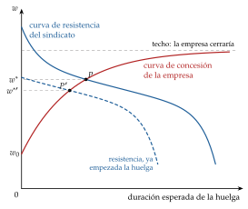
Fuente: elaboración propia a partir de Hicks (1932, 141-45).
A.2. El enfoque axiomático de Nash
Planteamiento (Nash, 1950). 2 jugadores, el sindicato como jugador 1 (\(u_1=U_S\)) y la empresa como jugador 2 (\(u_2=B\)); un conjunto \(\mathcal{U}\) de pares de utilidades alcanzables con un acuerdo, convexo y compacto, y un punto de desacuerdo \(\big(u_1^0,u_2^0\big)=\big(U_S^0,B^0\big)\), lo que obtiene cada uno si no hay acuerdo. Basta que en \(\mathcal{U}\) haya algún punto que mejore a los 2 respecto del desacuerdo: si no, no hay nada que negociar.
Axiomas. Se piden a la solución 4 propiedades razonables:
que sea eficiente: no queda ninguna ganancia mutua sin aprovechar. No es «el mejor» resultado, porque hay muchos eficientes: el axioma solo exige que el acuerdo esté en la frontera de \(\mathcal{U}\);
que trate igual a jugadores iguales (simetría): si el problema es simétrico, el reparto también lo es;
que no dependa de las unidades en que se mide la utilidad (invariancia a transformaciones afines): si se cambia \(u_i\) por \(a_i+b_i\,u_i\), con \(b_i>0\), la solución cambia de la misma forma. Es lo que permite usar utilidades de von Neumann-Morgenstern, cuyo origen y escala son arbitrarios [ver tema 3.A.10];
que no cambie si se quitan alternativas que de todos modos no se habrían elegido (independencia de las alternativas irrelevantes).
Resultado. La única solución que cumple los 4 axiomas maximiza el producto de las ganancias respecto del punto de desacuerdo. Si se abandona la simetría (Kalai, 1977), la solución de Nash generalizada pondera cada ganancia con el poder de negociación \(\gamma\in(0,1)\): \[\begin{array}{rl}\displaystyle \max_{u_1,\,u_2} & \displaystyle \big(u_1-u_1^0\big)^{\gamma}\big(u_2-u_2^0\big)^{1-\gamma} \\ \text{s.a.} & (u_1,u_2)\in\mathcal{U} \\ & u_1\geq u_1^0,\ \ u_2\geq u_2^0\end{array}\] que en la negociación salarial es (1). Con los 4 axiomas, \(\gamma=\tfrac{1}{2}\): la simetría no es un supuesto sobre el poder, sino la propiedad que lo iguala.
Utilidad transferible. Si las partes se reparten un excedente \(\Pi\), con \(u_1+u_2=\Pi\), el problema es maximizar \(\gamma\ln\big(u_1-u_1^0\big)+(1-\gamma)\ln\big(\Pi-u_1-u_2^0\big)\). La condición de primer orden, \(\gamma/\big(u_1-u_1^0\big)=(1-\gamma)/\big(\Pi-u_1-u_2^0\big)\), da \[u_1=u_1^0+\gamma\,\big(\Pi-u_1^0-u_2^0\big),\qquad u_2=u_2^0+(1-\gamma)\,\big(\Pi-u_1^0-u_2^0\big)\] Cada parte recibe su punto de desacuerdo más su cuota del excedente neto del acuerdo.∎
Amenazas: Nash (1953) extiende el modelo a juegos en que las partes eligen también lo que harán si no hay acuerdo: el punto de desacuerdo deja de ser un dato.
Valoración: toma \(\gamma\) y el punto de desacuerdo como datos, y su axioma más discutido es la independencia de las alternativas irrelevantes (Osborne y Rubinstein, 1990, cap. 2; Mas-Colell, Whinston y Green, 1995, cap. 22). El enfoque estratégico explica de dónde sale \(\gamma\).
A.3. El enfoque estratégico de Rubinstein
Planteamiento (Rubinstein, 1982). El sindicato y la empresa se reparten un excedente de tamaño 1. En los periodos impares propone el sindicato y en los pares la empresa; el otro acepta o rechaza y, si rechaza, propone él en el periodo siguiente. No hay fecha final. Una unidad recibida un periodo más tarde vale \(\beta_S<1\) para el sindicato y \(\beta_B<1\) para la empresa (factores de descuento).
Es un juego dinámico con información completa y no cooperativo. Que sea no cooperativo no significa que los intereses se opongan (eso es un juego de suma constante), sino que no hay acuerdos vinculantes fuera del juego: cada parte elige sus ofertas y respuestas.
El concepto de solución es el ENPS: en este juego hay infinitos equilibrios de Nash, sostenidos por amenazas que no son creíbles, y la perfección en subjuegos los elimina [ver tema 3.A.14].
Reparto estacionario. Sea \(x^*\) la parte que se lleva el sindicato cuando propone e \(y^*\) la que se lleva la empresa cuando propone.
Cuando propone el sindicato, la empresa acepta cualquier oferta que le dé al menos lo que obtendría rechazando y proponiendo ella al periodo siguiente, \(\beta_B\,y^*\). El sindicato le ofrece justo eso: \(x^*=1-\beta_B\,y^*\).
Del mismo modo, cuando propone la empresa: \(y^*=1-\beta_S\,x^*\).
Sustituyendo, \(x^*=1-\beta_B\big(1-\beta_S\,x^*\big)\), de donde \[x^*=\frac{1-\beta_B}{1-\beta_S\,\beta_B},\qquad 1-x^*=\frac{\beta_B\,(1-\beta_S)}{1-\beta_S\,\beta_B}\]
Rubinstein (1982) demuestra que este es el único ENPS: el acuerdo es inmediato, gana más el más paciente y quien propone primero tiene ventaja.∎
Horizonte finito frente a infinito. Con una fecha final (Ståhl, 1972), el juego se resuelve hacia atrás desde la última ronda: quien propone en ella ofrece al otro lo mínimo que acepta y se queda con el resto, y el reparto depende sobre todo de quién hace la última oferta y de cuántas rondas hay, que son detalles arbitrarios. La aportación de Rubinstein es mostrar que, sin fecha final, el equilibrio sigue siendo único y depende solo de la impaciencia.
El límite (Binmore, Rubinstein y Wolinsky, 1986). Si el tiempo entre ofertas es \(\Delta\) y \(\beta_i=e^{-\rho_i\Delta}\approx 1-\rho_i\Delta\), con \(\rho_S\) y \(\rho_B\) las tasas de descuento, \[x^*\approx\frac{\rho_B\,\Delta}{\rho_S\,\Delta+\rho_B\,\Delta-\rho_S\,\rho_B\,\Delta^2}\ \xrightarrow[\Delta\to 0]{}\ \frac{\rho_B}{\rho_S+\rho_B}\] y la ventaja de proponer primero desaparece. La solución de Nash generalizada con \(u_S=x\), \(u_B=1-x\) y desacuerdo \((0,0)\) maximiza \(x^{\gamma}(1-x)^{1-\gamma}\), cuya condición de primer orden, \(\gamma/x=(1-\gamma)/(1-x)\), da \(x=\gamma\). Por tanto, el límite de Rubinstein es la solución de Nash con el \(\gamma\) de (2).∎
Riesgo de ruptura. Los mismos autores muestran que, si lo que empuja al acuerdo no es la impaciencia sino el riesgo de que la negociación se rompa, el reparto vuelve a ser una solución de Nash, y la parte más aversa al riesgo de ruptura se lleva menos.
Valoración: con información completa nunca hay huelga. Las huelgas reales se explican con información privada: el sindicato no sabe cuánto puede pagar la empresa, y la huelga es la forma de que esta lo revele, porque solo una empresa con pocos beneficios prefiere aguantar un conflicto largo a pagar más (Kennan y Wilson, 1993). Además, estos modelos dicen cómo se reparte la renta, pero no qué pasa con el empleo: eso lo añaden los modelos de negociación colectiva (I.2).
B. Anexo: derivaciones de la negociación colectiva y contratos eficientes
B.1. El sindicato monopolista
Condición general. El sindicato maximiza \(U_S\big(w,L^D(w)\big)\), que, salvo la constante \(u(z)\), es \(\frac{L^D(w)}{\overline{L}}\big[u(w)-u(w^R)\big]\). La condición de primer orden es \[L^{D\prime}(w)\,\big[u(w)-u(w^R)\big]+L^D(w)\,u'(w)=0\ \ \Longrightarrow\ \ \frac{u(w)-u(w^R)}{w\,u'(w)}=\frac{L^D(w)}{-w\,L^{D\prime}(w)}=\frac{1}{|\varepsilon_{L^D,w}|}\] que es (7). Con \(u\) lineal queda \((w-w^R)/w=1/|\varepsilon_{L^D,w}|\), es decir, \(w^S\big(1-1/|\varepsilon_{L^D,w}|\big)=w^R\).∎
Demanda isoelástica. Con \(F(L)=L^{\alpha}\), la demanda de trabajo sale de \(\alpha\,A\,L^{\alpha-1}=w\): \[L^D(w)=\Big(\frac{\alpha\,A}{w}\Big)^{\frac{1}{1-\alpha}},\qquad \varepsilon_{L^D,w}=-\frac{1}{1-\alpha}\] Sustituyendo en la regla de margen, \(w^S\,\alpha=w^R\), es decir, \(w^S=w^R/\alpha\), que no depende de \(A\). El empleo, \(L^D(w^S)=\big(\alpha^2A/w^R\big)^{1/(1-\alpha)}\), sí: es proporcional a \(A^{1/(1-\alpha)}\). Un shock de productividad lo absorbe entero el empleo.∎
El límite de \(\overline{L}\). Si un shock positivo lleva la demanda a emplear a más de \(\overline{L}\) al salario \(w^S\), la restricción \(L^D(w)\leq\overline{L}\) se satura: al sindicato no le sirve más empleo y sube el salario hasta \(w=A\,F'(\overline{L})\). Solo entonces el salario responde al shock.
B.2. El derecho a gestionar
Condición general. Con \(U_S^0=u(z)\) y \(B^0=0\), y tomando logaritmos, el problema (9) es \[\max_{w}\ \gamma\,\ln\Big\{\frac{L^D(w)}{\overline{L}}\big[u(w)-u(w^R)\big]\Big\}+(1-\gamma)\,\ln B(w)\] con \(B(w)\) el beneficio máximo a cada salario y, por el teorema de la envolvente, \(B'(w)=-L^D(w)\). La condición de primer orden, multiplicada por \(w\), es \[\gamma\Big[-|\varepsilon_{L^D,w}|+\frac{w\,u'(w)}{u(w)-u(w^R)}\Big]=(1-\gamma)\,\frac{w\,L}{B}\ \ \Longrightarrow\ \ \frac{u(w)-u(w^R)}{w\,u'(w)}=\frac{\gamma}{\gamma\,|\varepsilon_{L^D,w}|+(1-\gamma)\,\frac{w\,L}{B}}\] Con \(\gamma=1\) es la condición del sindicato monopolista y con \(\gamma=0\) da \(w=w^R\); el salario crece con \(\gamma\) y con \(w^R\) (Cahuc, Carcillo y Zylberberg, 2014, cap. 7).∎
Neutralidad y Cobb-Douglas. Con \(u\) lineal, \(|\varepsilon_{L^D,w}|=1/(1-\alpha)\) y \(w\,L/B=\alpha/(1-\alpha)\), porque la masa salarial es la fracción \(\alpha\) del producto y el beneficio, la \(1-\alpha\). Sustituyendo, \[\frac{w-w^R}{w}=\frac{\gamma\,(1-\alpha)}{\gamma+(1-\gamma)\,\alpha}\ \ \Longrightarrow\ \ w=w^R\,\frac{\gamma+(1-\gamma)\,\alpha}{\alpha}=(1-\gamma)\,w^R+\gamma\,\frac{w^R}{\alpha}=(1-\gamma)\,w^R+\gamma\,w^S\] que es (10): la media de los 2 extremos ponderada por el poder, que no depende de \(A\).∎
B.3. La curva de contratos
Tangencias. Igualando la pendiente de la isobeneficio (4) y la de la indiferencia (6), \[\frac{A\,F'(L)-w}{L}=-\frac{u(w)-u(w^R)}{L\,u'(w)}\ \ \Longrightarrow\ \ A\,F'(L)=g(w)\equiv w-\frac{u(w)-u(w^R)}{u'(w)}\] que es (11).
Pendiente. Derivando, \(g'(w)=\dfrac{\big[u(w)-u(w^R)\big]\,u''(w)}{u'(w)^2}\), negativa si \(u''<0\) y \(w>w^R\), y nula si \(u''=0\). Diferenciando la curva, \(A\,F''(L)\,dL=g'(w)\,dw\), así que \[\frac{dw}{dL}=\frac{A\,F''(L)}{g'(w)}\] es positiva con aversión al riesgo (numerador y denominador negativos) y la curva es vertical con neutralidad (\(g'=0\) y \(g(w)=w^R\)).
Posición. Por la concavidad de \(u\), \(u(w^R)\leq u(w)+u'(w)\,(w^R-w)\), luego \(g(w)\leq w^R\): con aversión al riesgo, \(A\,F'(L)<w^R\) y el empleo supera al competitivo.
Extremos. Con \(\gamma=0\) el acuerdo es \(C\), con \(w=w^R\) y \(L=L^c\). Con \(\gamma=1\) es \(F\), donde la empresa se queda sin beneficio, \(A\,F(L)-w\,L=0\), y el salario es el producto medio, \(w=A\,F(L)/L\). Al llegar a \(L=\overline{L}\) (punto \(D\)), la curva sigue vertical hasta \(F\), porque al sindicato ya no le sirve más empleo.∎
B.4. Contratos fuertemente eficientes
Supuestos. Sindicato y empresa negocian el salario \(w\), el empleo \(L\) y un pago \(b\) que la empresa hace a cada afiliado que queda parado (un seguro o una indemnización), que así obtiene la utilidad \(u(w^R+b)\). Entonces \[U_S=\frac{L}{\overline{L}}\,u(w)+\Big(1-\frac{L}{\overline{L}}\Big)\,u(w^R+b),\qquad B=A\,F(L)-w\,L-b\,\big(\overline{L}-L\big)\]
El principio de indiferencia. Para un pago total dado a los afiliados, \(T=w\,L+b\,(\overline{L}-L)\), el reparto entre empleados y parados que maximiza \(U_S\) cumple, con el multiplicador \(\lambda\) de esa restricción, \[\frac{L}{\overline{L}}\,u'(w)=\lambda\,L,\qquad \Big(1-\frac{L}{\overline{L}}\Big)\,u'(w^R+b)=\lambda\,\big(\overline{L}-L\big)\ \ \Longrightarrow\ \ u'(w)=u'(w^R+b)\] Como \(u'\) es decreciente, \(w=w^R+b\): el parado queda igual de bien que el empleado. Es el principio de indiferencia: no que al sindicato le dé igual el resultado (prefiere salarios altos y a la empresa sin beneficio), sino que a cada afiliado le da igual trabajar o no, porque está asegurado del todo frente al riesgo de paro (Cahuc, Carcillo y Zylberberg, 2014, cap. 7).∎
La curva de contratos. Con \(w=w^R+b\), la utilidad del sindicato es \(U_S=u(w)\), que no depende de \(L\): sus indiferencias son horizontales. El beneficio queda \[B=A\,F(L)-w^R\,L-\big(w-w^R\big)\,\overline{L}\] como si la empresa pagara \(w^R\) a cada empleado y \(w-w^R\) a todos los afiliados. Su isobeneficio tiene pendiente \[\left.\frac{dw}{dL}\right|_{dB=0}=\frac{A\,F'(L)-w^R}{\overline{L}}\] que se anula donde \(A\,F'(L)=w^R\), sea cual sea \(w\): todas las isobeneficio tienen su máximo en el empleo competitivo, y las tangencias con las indiferencias horizontales están todas en \(L^c\). La curva de contratos es vertical en \(L^c\), de \(C\) (\(\gamma=0\), \(b=0\), \(w=w^R\)) a \(F'\) (\(\gamma=1\), beneficio nulo, \(w=w^R+\big[A\,F(L^c)-w^R\,L^c\big]/\overline{L}\)) (gráfico 10). El empleo es el eficiente con aversión al riesgo, y el poder sindical solo decide el salario.∎
Con derecho a gestionar. Booth (1995a) llega al mismo resultado aunque la empresa decida el empleo: si en la mesa están el salario y las indemnizaciones por despido, se asegura del todo a los trabajadores y el producto marginal iguala el coste de oportunidad del trabajo. Por eso, con indemnizaciones negociadas, el derecho a gestionar y los contratos eficientes son difíciles de distinguir con datos.
Por qué no se observa: los convenios negocian muchas cosas a la vez y duran varios años; el poder de cada parte no es el mismo en todas las materias; el empleo se decide después del salario; los seguros de paro son sobre todo públicos y no cubren toda la pérdida de renta, y un seguro completo crea riesgo moral en la búsqueda de empleo y en el esfuerzo [ver tema 3.A.13].
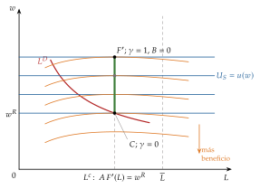
Fuente: elaboración propia a partir de Booth (1995a) y Cahuc, Carcillo y Zylberberg (2014, cap. 7).
C. Anexo: el modelo de Shapiro y Stiglitz paso a paso
C.1. Las transiciones
Procesos de Poisson. Las separaciones siguen un proceso de Poisson de tasa \(s\): si un trabajador que se esfuerza está empleado hoy, la probabilidad de que lo siga estando dentro de un tiempo \(\tau\) es \(e^{-s\tau}\), que no depende de cuánto lleve en el puesto (el proceso no tiene memoria), y en un intervalo corto \(dt\) pierde el empleo con probabilidad \(s\,dt\).
Al que se escaquea, además, lo descubren con probabilidad \(q\,dt\), así que sigue empleado tras un tiempo \(\tau\) con probabilidad \(e^{-(s+q)\tau}\). Los parados encuentran empleo con probabilidad \(f\,dt\).
La economía es lo bastante grande para que, aunque cada relación laboral termine al azar, los flujos agregados entre el empleo y el paro no lo sean.
Las empresas ofrecen el subsidio de paro mínimo que permite la ley, porque uno mayor haría más llevadero el despido y les obligaría a pagar más salario; aquí se normaliza a 0 (Shapiro y Stiglitz, 1984, 437).
C.2. Las ecuaciones de valor y la condición de no escaqueo
Ecuaciones de valor. En un intervalo corto \(dt\), el trabajador que se esfuerza cobra \((w-\overline{e})\,dt\) y, al final, sigue empleado con probabilidad \(1-s\,dt\) o pasa al paro con probabilidad \(s\,dt\): \[V_{\mathrm E}=(w-\overline{e})\,dt+e^{-\rho\,dt}\big[s\,dt\,V_{\mathrm U}+(1-s\,dt)\,V_{\mathrm E}\big]\] Con \(e^{-\rho\,dt}\approx 1-\rho\,dt\), despreciando los términos en \(dt^2\) y dividiendo entre \(dt\): \[\rho\,V_{\mathrm E}=(w-\overline{e})-s\,\big(V_{\mathrm E}-V_{\mathrm U}\big)\] Del mismo modo, \(\rho\,V_{\mathrm S}=w-(s+q)\,\big(V_{\mathrm S}-V_{\mathrm U}\big)\) y \(\rho\,V_{\mathrm U}=f\,\big(V_{\mathrm E}-V_{\mathrm U}\big)\), que son las de (18).∎
La restricción de incentivos. Con \(V_{\mathrm E}=V_{\mathrm S}\), restando la segunda de la primera: \[0=-\overline{e}-s\,\big(V_{\mathrm E}-V_{\mathrm U}\big)+(s+q)\,\big(V_{\mathrm E}-V_{\mathrm U}\big)\ \ \Longrightarrow\ \ V_{\mathrm E}-V_{\mathrm U}=\frac{\overline{e}}{q}\]
El salario. Restando la tercera de la primera, \(\rho\,\big(V_{\mathrm E}-V_{\mathrm U}\big)=(w-\overline{e})-(s+f)\,\big(V_{\mathrm E}-V_{\mathrm U}\big)\), y con \(V_{\mathrm E}-V_{\mathrm U}=\overline{e}/q\): \[w=\overline{e}+\big(\rho+f+s\big)\,\frac{\overline{e}}{q}\] El salario que evita el escaqueo sube con la tasa a la que los parados encuentran empleo: cuanto antes se vuelve a trabajar, menos castiga el despido.
El estado estacionario. Las entradas en el paro, \(s\,J\,L\), igualan a las salidas, \(f\,\big(\overline{L}-J\,L\big)\): \[f=\frac{s\,J\,L}{\overline{L}-J\,L},\qquad f+s=\frac{s\,\overline{L}}{\overline{L}-J\,L}=\frac{s}{U}\] con \(U\equiv\big(\overline{L}-J\,L\big)/\overline{L}\) la tasa de paro. Sustituyendo se obtiene la CNE (19): \[w=\overline{e}+\Big(\rho+\frac{s}{U}\Big)\frac{\overline{e}}{q}\] Sin empleo (\(J\,L=0\), \(U=1\)) vale \(\overline{e}+(\rho+s)\,\overline{e}/q\); crece con el empleo y tiende a infinito cuando \(J\,L\to\overline{L}\).∎
El equilibrio: el empleo por empresa, \(L^*\), iguala la demanda de trabajo y la CNE, \[A\,\overline{e}\,F'\big(\overline{e}\,L^*\big)=\overline{e}+\Big(\rho+\frac{s\,\overline{L}}{\overline{L}-J\,L^*}\Big)\frac{\overline{e}}{q}\] Ninguna empresa quiere pagar más, porque consigue todos los trabajadores que quiere al salario \(w^*\) y estos se esfuerzan; ni menos, porque se escaquearían (Shapiro y Stiglitz, 1984, 438).
C.3. Estática comparativa: más vigilancia y sin rotación
Más vigilancia (\(q\uparrow\); panel a del gráfico 11). Como \(\partial w/\partial q=-\big(\rho+s/U\big)\,\overline{e}/q^2<0\), la CNE baja. La demanda no cambia, así que el equilibrio se desplaza hacia abajo a lo largo de ella: menos salario, más empleo y menos paro. Si \(q\to\infty\), la CNE se pega a la oferta y se llega al equilibrio walrasiano \(E^W\). Al revés, una vigilancia peor o más rotación (\(s\uparrow\)) suben la CNE, con más salario y más paro (Shapiro y Stiglitz, 1984, 439).
Sin rotación (\(s=0\); panel b). En estado estacionario no entra nadie en el paro, así que nadie sale de él: \(f=0\). La CNE queda \[w=\overline{e}+\rho\,\frac{\overline{e}}{q}\] horizontal: el salario no depende del empleo y una caída de la demanda la absorbe entero el empleo. Se entiende igualando lo que gana y lo que arriesga quien se escaquea: gana \(\overline{e}\) por unidad de tiempo y, con probabilidad \(q\), pierde para siempre la renta del empleo, \(V_{\mathrm E}-V_{\mathrm U}=(w-\overline{e})/\rho\), porque el despedido nunca vuelve a trabajar (\(V_{\mathrm U}=0\)). Con \(q\,(w-\overline{e})/\rho=\overline{e}\) sale la misma condición.∎
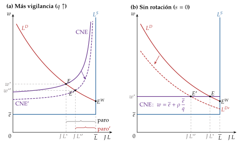
Fuente: elaboración propia a partir de Shapiro y Stiglitz (1984) y Romer (2019, cap. 11).
C.4. Bienestar y política económica
El óptimo social. Si los trabajadores son a la vez dueños de las empresas, a partes iguales, el planificador maximiza la utilidad del trabajador representativo sujeta a la CNE y a que los salarios no superen la producción. Le conviene pagar todo en salario y nada en subsidio de paro, y el óptimo está donde la CNE corta al producto medio del trabajo, \(A\,F(\overline{e}L)/L\), no al marginal: con más empleo y más salario que el equilibrio \(E\) (Shapiro y Stiglitz, 1984, 440).
Cómo se alcanza: gravando los beneficios puros y usando lo recaudado para subvencionar los salarios. La subvención desplaza la demanda de trabajo hacia arriba, a lo largo de la CNE. Con rendimientos constantes a escala, el producto marginal es igual al medio y el equilibrio ya es óptimo.
Por qué el equilibrio tiene demasiado paro: cada empresa ve como coste de un trabajador más el salario, \(w\), cuando para la sociedad es solo el esfuerzo, \(\overline{e}\). Hay un efecto contrario, porque al contratar reduce la bolsa de parados y obliga a las demás a pagar más, pero en el modelo sencillo pesa menos (Shapiro y Stiglitz, 1984, 440-41).
Eficiencia y reparto. Si trabajadores y propietarios son personas distintas, la subvención baja los beneficios y deja de ser una mejora en el sentido de Pareto: el equilibrio es óptimo de Pareto aunque no maximice el producto. Que lo sea o no depende del reparto de la riqueza, y no se cumple la separación habitual entre eficiencia y distribución (Shapiro y Stiglitz, 1984, 440).
D. Anexo: la centralización de la negociación colectiva
¿A qué nivel conviene negociar los salarios: en cada empresa, en cada sector o en todo el país? La pregunta importa porque cambia lo que cada sindicato tiene en cuenta al pedir una subida.
D.1. La teoría: Bruno y Sachs (1985) y Calmfors y Driffill (1988)
Bruno y Sachs (1985): ante un shock de oferta, como la subida del petróleo de los años 70, el efecto depende de lo centralizada que esté la negociación.
En un sistema centralizado, los sindicatos saben que pedir más salario nominal solo trae más inflación y no más salario real, y que la pérdida de renta que impone el shock no se compensa con subidas: moderan sus peticiones.
En un sistema descentralizado, cada sindicato pesa poco en la inflación y tiene incentivos a pedir más; y si no lo hace mientras los demás sí, sus afiliados pierden. Todos acaban pidiendo más, y la inflación es más difícil de moderar.17
Calmfors y Driffill (1988) añaden el otro extremo. En un sistema muy descentralizado, con negociación de empresa, una subida excesiva hace perder competitividad a la propia empresa y empleo a sus trabajadores, así que los sindicatos también se moderan. Los peores resultados estarían en el nivel intermedio, el sectorial: ni se interioriza la inflación, como en el centralizado, ni la pérdida de empleo de la empresa, como en el descentralizado. Es la hipótesis de la joroba: el salario real y el paro, frente al grado de centralización, tienen forma de U invertida (gráfico 12). Los países de los extremos resistieron mejor los shocks de oferta de los años 70 y 80.
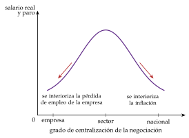
Fuente: elaboración propia a partir de Calmfors y Driffill (1988).
D.2. La evidencia posterior
Con más países y más años, la joroba no resiste bien: los resultados dependen de cómo se mida la centralización y del periodo (Flanagan, 1999).
La OCDE no encuentra la joroba con datos recientes. Lo que se asocia con más empleo, menos paro, mejor integración de los colectivos vulnerables y menos desigualdad salarial es la coordinación entre niveles de negociación más que el grado de centralización: los sistemas coordinados salen mejor que los totalmente descentralizados, y los centralizados sin coordinación quedan en medio (OCDE, 2017, 2018, 2019).
D.3. El caso español
Un modelo para España. Con un modelo de búsqueda y emparejamiento y shocks de productividad propios de cada empresa, Jimeno y Thomas (2013) encuentran que la negociación sectorial da un paro unos 5 puntos mayor que la de empresa en su calibración, porque impone a todas las empresas un salario que no tiene en cuenta su situación: se crean menos empleos y se destruyen más (Jimeno y Thomas, 2011). Basta permitir que las empresas en dificultades pacten con sus trabajadores descolgarse del convenio sectorial para eliminar esa diferencia; sin esa vía, el ajuste se hace despidiendo.
Las propuestas. Es el diagnóstico de la propuesta de reforma laboral que un centenar de economistas publicó en 2009, que pedía más peso para los convenios de empresa, cláusulas de descuelgue y una coordinación que ligara los salarios a la productividad (FEDEA, 2009).
Las reformas.
La reforma de 2012 siguió esa lógica: dio prioridad al convenio de empresa sobre el sectorial en la cuantía del salario, limitó a un año la prórroga de los convenios denunciados (la ultraactividad) y facilitó el descuelgue por causas económicas (Jefatura del Estado, 2012).
La de 2021 dio marcha atrás en parte: el convenio sectorial vuelve a mandar en los salarios y los convenios denunciados siguen vigentes hasta que se firme otro, aunque se mantiene el descuelgue (Jefatura del Estado, 2021; Ministerio de Empleo y Seguridad Social, 2015). Sus efectos se estudian en [ver tema 4.A.16].
Los datos. La negociación sigue siendo sobre todo sectorial: en 2025, solo el 7,4 % de los trabajadores con convenio lo tenía de empresa o de grupo de empresas, frente al 10,7 % de 2013. Y el descuelgue se usa poco: 295 inaplicaciones, con 13 723 trabajadores, entre enero y septiembre de 2026, frente a 2 512 y casi 160 000 en todo 2013 (Ministerio de Trabajo y Economía Social, 2026a, 2026b).
En una unión monetaria, donde el tipo de cambio ya no ajusta, la forma de negociar decide cómo responden los salarios a los shocks asimétricos [ver tema 3.B.16].
¿Cuántos asalariados cubren los convenios en España? Depende de cómo se mida
OCDE: el 92,1 % de los asalariados con derecho a negociar en 2024, frente a una media de la OCDE del 33,6 % (OCDE, 2026a). Es el dato de la introducción y de la valoración de la negociación (I.2.5).
OIT: el 80,1 % en 2018, su último año para España, con los trabajadores con convenio sobre los asalariados de la Encuesta de Población Activa (Organización Internacional del Trabajo, 2026).
Cociente con los convenios registrados: unos 13,1 millones de trabajadores con convenio con efectos económicos en 2024 sobre 19,0 millones de asalariados de la contabilidad nacional, el 69 % (Ministerio de Trabajo y Economía Social, 2026a; Eurostat, 2026). Se queda corto, porque solo cuenta los convenios con efectos económicos registrados.
La afiliación sindical es mucho menor, el 12,5 % de los asalariados en 2023 (OCDE, 2026b): los convenios obligan a todos los empresarios y trabajadores de su ámbito, estén o no afiliados (Ministerio de Empleo y Seguridad Social, 2015, art. 82.3).
E. Anexo: insiders y outsiders
Este anexo desarrolla el modelo que el apartado III.3 resume (Lindbeck y Snower, 1986, 1988).
Quién es insider. La frontera entre insiders y outsiders puede venir de la afiliación al sindicato, del capital humano específico o de la legislación de protección del empleo. Su ventaja nace de los costes de despido y de contratación y, a veces, de una mayor productividad, por la formación específica o porque pueden negarse a cooperar con los recién llegados.18
E.1. El programa de la empresa
Juego en 2 etapas. En la primera, los \(\overline{L}_I\) insiders negocian su salario, \(w_I\); en la segunda, dado el salario, la empresa decide cuántos conserva, \(L_I\), y cuántos outsiders contrata, \(L_O\), a su salario de reserva, \(w_O=w^R\). Se resuelve hacia atrás. El programa de la empresa, con el precio del producto normalizado a 1, es \[\begin{array}{rl}\displaystyle \max_{L_I,\,L_O} & \displaystyle B=A\,F\big(L_I+L_O\big)-w_I\,L_I-w_O\,L_O-c_D\,\big(\overline{L}_I-L_I\big)-c_C\,L_O \\ \text{s.a.} & L_I\leq\overline{L}_I \\ & L_I,\,L_O\geq 0\end{array}\] La empresa no elige los salarios, que ya se han negociado: solo el empleo.
Condiciones de primer orden (si las 2 clases de trabajadores se emplean sin llegar a los límites): \[\frac{\partial B}{\partial L_I}=A\,F'(L)-w_I+c_D=0,\qquad \frac{\partial B}{\partial L_O}=A\,F'(L)-w_O-c_C=0\] con \(L=L_I+L_O\). Conservar a un insider cuesta su salario menos el despido que se ahorra; contratar a un outsider, su salario más el coste de contratarlo. Como el producto marginal es el mismo, la empresa solo es indiferente entre ambos si \[w_I=w_O+c_D+c_C\] que es (22): el salario máximo que pueden pedir los insiders sin que la empresa los sustituya.∎
E.2. Los 3 casos
Hay un segundo límite: la empresa conserva a todos los insiders solo si, con el empleo total \(L\) que elige, el último de ellos le aporta, con el despido que se ahorra, al menos lo que cobra, \(A\,F'(L)+c_D\geq w_I\) (sin contratar outsiders, \(L=\overline{L}_I\)). El salario máximo de los insiders es el menor de los 2 límites, y nunca menor que el de reserva. Con los umbrales \(L_1\), donde \(A\,F'(L_1)=w_O+c_C\), y \(L_2\), donde \(A\,F'(L_2)+c_D=w^R\), hay 3 casos según cuántos insiders haya (gráfico 13):
Caso A, pocos insiders (\(\overline{L}_I<L_1\)): a la empresa le sale a cuenta contratar también outsiders, hasta \(L_1\). Los insiders cobran el máximo, \(w_I=w_O+c_D+c_C\).
Caso B, número intermedio (\(L_1\leq\overline{L}_I\leq L_2\)): la empresa ni contrata ni despide, y los insiders cobran lo que aporta el último de ellos más el despido que se ahorra, \(w_I=A\,F'(\overline{L}_I)+c_D\), entre \(w^R\) y el máximo.
Caso C, muchos insiders (\(\overline{L}_I>L_2\)): ni al salario de reserva le compensa conservarlos a todos. Despide hasta \(L_2\) y el salario es \(w^R\).
Implicaciones:
En el caso B, el empleo es el número de insiders que hubiera: depende de la historia, que es la raíz de la histéresis (O. J. Blanchard y Summers, 1986) [ver tema 3.A.28].
En el caso B, además, el salario es mayor cuanto menos insiders quedan. Por eso se ha dicho que el modelo da un salario real contracíclico, pero esa no es su predicción central: lo central es el paro involuntario de los outsiders y su persistencia.
La política económica busca bajar los costes de rotación y abrir la puerta a los outsiders: menos poder de los insiders, cláusulas de descuelgue, formación de los parados y subvenciones a su contratación. España es el ejemplo de un mercado de insiders y outsiders y de sus reformas (Bentolila, Dolado y Jimeno, 2012).
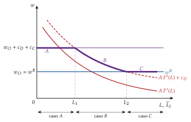
Fuente: elaboración propia a partir de Lindbeck y Snower (1988).
F. Anexo: aspectos para el test
Preguntas tipo test del primer ejercicio: simulador de test.
Nash generalizada con utilidad transferible: cada parte recibe su punto de desacuerdo más su cuota del excedente, \(\gamma\) el sindicato y \(1-\gamma\) la empresa; con los 4 axiomas, \(\gamma=\tfrac{1}{2}\). Los axiomas: eficiencia, simetría, invariancia a transformaciones afines positivas e independencia de las alternativas irrelevantes.
Rubinstein: horizonte infinito, único ENPS, acuerdo inmediato, \(x^*=(1-\beta_B)/(1-\beta_S\beta_B)\) para quien propone primero; en el límite, \(\gamma=\rho_B/(\rho_S+\rho_B)\) (gana el más paciente).
Sindicato monopolista: sobre la demanda de trabajo; con neutralidad, \(w^S\big(1-1/|\varepsilon_{L^D,w}|\big)=w^R\), y con Cobb-Douglas, \(w^S=w^R/\alpha\), que no depende de la productividad. Equilibrio perfecto en subjuegos, pero no óptimo de Pareto.
Derecho a gestionar: sobre la demanda; \(w=(1-\gamma)\,w^R+\gamma\,w^S\) con Cobb-Douglas y neutralidad; ineficiente salvo con \(\gamma=0\).
Contratos eficientes: fuera de la demanda; curva de contratos vertical en \(L^c\) con neutralidad y creciente con aversión al riesgo (sobreempleo); con un seguro de paro negociado, vertical también con aversión (fuertemente eficientes).
Solow: el salario de eficiencia minimiza \(w/e(w)\) y cumple \(\varepsilon_{e,w}=1\); no depende de la productividad ni de la demanda de trabajo.
Shapiro y Stiglitz: \(w=\overline{e}+\big(\rho+s/U\big)\,\overline{e}/q\); sube con \(\overline{e}\), \(\rho\) y \(s\) y baja con \(q\) y con el paro; sin paro no hay salario que disuada; con \(s=0\), la CNE es horizontal.
Contratos implícitos: renta constante en todos los estados (seguro completo) y empleo eficiente en cada uno; rigidez salarial sin paro involuntario.
Insiders: \(w_I\leq w_O+c_D+c_C\); explican el paro involuntario, la histéresis y la dualidad.
Calmfors y Driffill: peores resultados con negociación sectorial (joroba); la evidencia posterior da más peso a la coordinación.
Bibliografía
John Hicks recibió el Premio Nobel de Economía en 1972, con Kenneth Arrow, «por sus contribuciones pioneras a la teoría del equilibrio económico general y a la teoría del bienestar» (The Nobel Prize, 1972).↩︎
John Nash recibió el Premio Nobel de Economía en 1994, con John Harsanyi y Reinhard Selten, «por su análisis pionero de los equilibrios en la teoría de los juegos no cooperativos» (The Nobel Prize, 1994).↩︎
Diferenciando (3), \(dB=\big(A\,F'(L)-w\big)\,dL-L\,dw=0\). A la izquierda de \(L^D(w)\), \(A\,F'(L)>w\): contratar a uno más da beneficio y, para mantenerlo constante, el salario tiene que subir. A la derecha, al revés. Y como \(\partial B/\partial w=-L<0\), a igual empleo, más salario es menos beneficio.↩︎
Con afiliados idénticos, las preferencias del sindicato son las de cada afiliado. Si fueran heterogéneos, habría que agregarlas con una regla de elección colectiva: con preferencias unimodales sobre una sola variable y votación por mayoría, decidiría el votante mediano [ver tema 3.A.24]; por ejemplo, un afiliado veterano con poco riesgo de despido, que daría más peso al salario que al empleo.↩︎
Es una utilidad esperada de von Neumann-Morgenstern [ver tema 3.A.10]: la utilidad de cada estado (empleado o parado) ponderada por su probabilidad. Cahuc, Carcillo y Zylberberg (2014, cap. 7) usan una función distinta en cada estado, \(u^e(w)\) y \(u^u(z)\), para recoger que el ocio vale distinto según se trabaje o no; definiendo el salario de reserva por \(u^e(w^R)=u^u(z)\), las conclusiones son las mismas.↩︎
No era obvio. Para Hicks (1932, 140), los fines habituales de los sindicatos son «proteger el nivel de vida acostumbrado […], mantener salarios justos y asegurar a los trabajadores una parte de los beneficios extraordinarios», sin una función objetivo; Dunlop (1944) propone que maximizan, y Ross (1948) los ve como organizaciones políticas, con dirigentes y afiliados de intereses distintos. Los modelos posteriores, desde McDonald y Solow (1981), adoptan la utilidad esperada de los afiliados (Oswald, 1985).↩︎
La solución de Nash es eficiente en el conjunto sobre el que se negocia. Aquí se negocia solo el salario y la empresa decide el empleo después, por su cuenta: por eso el resultado conjunto no es eficiente.↩︎
Booth (1995a) lo obtiene incluso con derecho a gestionar: si las indemnizaciones por despido están en la mesa, el derecho a gestionar y los contratos eficientes llevan a las mismas condiciones de eficiencia y son difíciles de distinguir con datos. Derivación en el anexo B.↩︎
Peter Diamond, Dale Mortensen y Christopher Pissarides recibieron el Premio Nobel de Economía en 2010 «por su análisis de los mercados con fricciones de búsqueda» (The Nobel Prize, 2010).↩︎
Robert Solow recibió el Premio Nobel de Economía en 1987 «por sus contribuciones a la teoría del crecimiento económico» (The Nobel Prize, 1987).↩︎
Se puede pensar que el número de empresas lo fija el capital de la economía, que a corto plazo está dado.↩︎
La condición de segundo orden de ese mínimo es \(e''(w^*)<0\): la función de esfuerzo tiene que ser cóncava en el óptimo. Si fuera cóncava desde el principio, con \(e(0)>0\), el cociente \(e(w)/w\) sería siempre decreciente y la empresa pagaría el salario más bajo posible: no habría salario de eficiencia (panel b del gráfico 6).↩︎
Solow defendía un marco ecléctico: el modelo keynesiano a corto plazo y el neoclásico a largo plazo. Con los salarios de eficiencia busca una explicación sencilla de la rigidez salarial a corto plazo; el problema es que su modelo la mantiene también a largo plazo.↩︎
Joseph Stiglitz recibió el Premio Nobel de Economía en 2001, con George Akerlof y Michael Spence, «por sus análisis de los mercados con información asimétrica» (The Nobel Prize, 2001).↩︎
Traducción propia; en el original: «those without jobs would be happy to work at \(w^*\) or lower, but cannot make a credible promise not to shirk at such wages».↩︎
Edgeworth no habla de óptimos de Pareto, que llegan después, pero su curva de contrato es justo el conjunto de los repartos eficientes en ese sentido.↩︎
Pasa como en un estadio de fútbol: si un aficionado se levanta, ve mejor el partido; si se levantan todos, nadie ve mejor y todos están más incómodos, y una vez de pie, nadie quiere ser el primero en sentarse, porque dejaría de ver el partido y los demás ni lo notarían.↩︎
Una productividad mayor se recoge con \(F\big(a\,L_I+L_O\big)\) y \(a>1\). Aquí \(a=1\): la ventaja de los insiders viene solo de los costes de rotación.↩︎